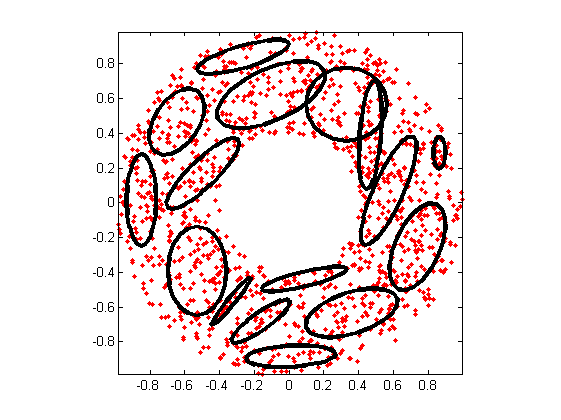
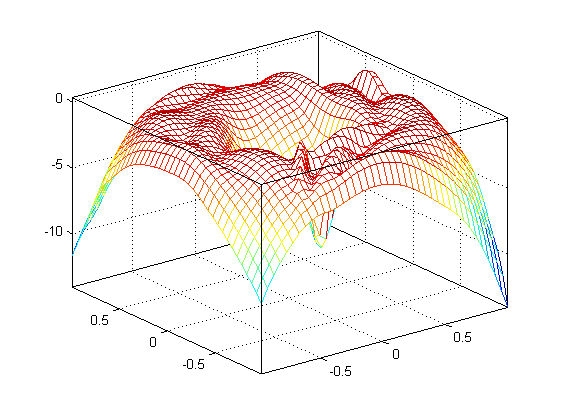
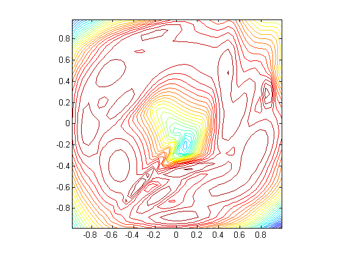

gmmGrowDemo
Example of using gmmGrow.m for growing a GMM
Contents
Syntax
- gmmGrowDemo
Description
gmmGrowDemo demonstrates the use of gmmGrow.m for growing a GMM
Example
gmmGrowDemo
Start KMEANS to find the initial mean vectors... GMM iteration: 0/500, log likelihood. = -2287.236399 GMM iteration: 1/500, log likelihood. = -2009.824951 GMM iteration: 2/500, log likelihood. = -2009.824951 GMM total iteration count = 3, log likelihood. = -2009.824951 Start KMEANS to find the initial mean vectors... GMM iteration: 0/500, log likelihood. = -2072.954072 GMM iteration: 1/500, log likelihood. = -1893.410248 GMM iteration: 2/500, log likelihood. = -1871.573062 GMM iteration: 3/500, log likelihood. = -1863.469954 GMM iteration: 4/500, log likelihood. = -1860.953518 GMM iteration: 5/500, log likelihood. = -1859.573286 GMM iteration: 6/500, log likelihood. = -1858.455853 GMM iteration: 7/500, log likelihood. = -1857.927702 GMM iteration: 8/500, log likelihood. = -1857.719188 GMM iteration: 9/500, log likelihood. = -1857.642688 GMM iteration: 10/500, log likelihood. = -1857.627634 GMM iteration: 11/500, log likelihood. = -1857.618958 GMM iteration: 12/500, log likelihood. = -1857.611102 GMM iteration: 13/500, log likelihood. = -1857.603717 GMM iteration: 14/500, log likelihood. = -1857.596756 GMM iteration: 15/500, log likelihood. = -1857.590191 GMM iteration: 16/500, log likelihood. = -1857.583998 GMM iteration: 17/500, log likelihood. = -1857.578152 GMM iteration: 18/500, log likelihood. = -1857.572633 GMM iteration: 19/500, log likelihood. = -1857.567422 GMM iteration: 20/500, log likelihood. = -1857.562498 GMM iteration: 21/500, log likelihood. = -1857.557846 GMM iteration: 22/500, log likelihood. = -1857.553449 GMM iteration: 23/500, log likelihood. = -1857.549291 GMM iteration: 24/500, log likelihood. = -1857.545359 GMM iteration: 25/500, log likelihood. = -1857.541639 GMM iteration: 26/500, log likelihood. = -1857.538120 GMM iteration: 27/500, log likelihood. = -1857.534789 GMM iteration: 28/500, log likelihood. = -1857.531636 GMM iteration: 29/500, log likelihood. = -1857.528650 GMM iteration: 30/500, log likelihood. = -1857.525822 GMM iteration: 31/500, log likelihood. = -1857.523143 GMM iteration: 32/500, log likelihood. = -1857.520605 GMM iteration: 33/500, log likelihood. = -1857.518200 GMM iteration: 34/500, log likelihood. = -1857.515920 GMM iteration: 35/500, log likelihood. = -1857.513759 GMM iteration: 36/500, log likelihood. = -1857.511709 GMM iteration: 37/500, log likelihood. = -1857.509765 GMM iteration: 38/500, log likelihood. = -1857.507922 GMM iteration: 39/500, log likelihood. = -1857.506173 GMM iteration: 40/500, log likelihood. = -1857.504513 GMM iteration: 41/500, log likelihood. = -1857.502938 GMM iteration: 42/500, log likelihood. = -1857.501443 GMM iteration: 43/500, log likelihood. = -1857.500024 GMM iteration: 44/500, log likelihood. = -1857.498677 GMM iteration: 45/500, log likelihood. = -1857.497398 GMM iteration: 46/500, log likelihood. = -1857.496183 GMM iteration: 47/500, log likelihood. = -1857.495029 GMM iteration: 48/500, log likelihood. = -1857.493933 GMM iteration: 49/500, log likelihood. = -1857.492891 GMM iteration: 50/500, log likelihood. = -1857.491902 GMM iteration: 51/500, log likelihood. = -1857.490962 GMM iteration: 52/500, log likelihood. = -1857.490068 GMM iteration: 53/500, log likelihood. = -1857.489219 GMM iteration: 54/500, log likelihood. = -1857.488411 GMM iteration: 55/500, log likelihood. = -1857.487644 GMM iteration: 56/500, log likelihood. = -1857.486914 GMM iteration: 57/500, log likelihood. = -1857.486220 GMM iteration: 58/500, log likelihood. = -1857.485560 GMM iteration: 59/500, log likelihood. = -1857.484932 GMM iteration: 60/500, log likelihood. = -1857.484335 GMM iteration: 61/500, log likelihood. = -1857.483768 GMM iteration: 62/500, log likelihood. = -1857.483227 GMM iteration: 63/500, log likelihood. = -1857.482713 GMM iteration: 64/500, log likelihood. = -1857.482224 GMM iteration: 65/500, log likelihood. = -1857.481759 GMM iteration: 66/500, log likelihood. = -1857.481316 GMM iteration: 67/500, log likelihood. = -1857.480895 GMM iteration: 68/500, log likelihood. = -1857.480494 GMM iteration: 69/500, log likelihood. = -1857.480112 GMM iteration: 70/500, log likelihood. = -1857.479749 GMM iteration: 71/500, log likelihood. = -1857.479403 GMM iteration: 72/500, log likelihood. = -1857.479074 GMM iteration: 73/500, log likelihood. = -1857.478760 GMM iteration: 74/500, log likelihood. = -1857.478462 GMM iteration: 75/500, log likelihood. = -1857.478178 GMM iteration: 76/500, log likelihood. = -1857.477907 GMM iteration: 77/500, log likelihood. = -1857.477649 GMM iteration: 78/500, log likelihood. = -1857.477404 GMM iteration: 79/500, log likelihood. = -1857.477170 GMM iteration: 80/500, log likelihood. = -1857.476947 GMM iteration: 81/500, log likelihood. = -1857.476735 GMM iteration: 82/500, log likelihood. = -1857.476533 GMM iteration: 83/500, log likelihood. = -1857.476341 GMM iteration: 84/500, log likelihood. = -1857.476158 GMM iteration: 85/500, log likelihood. = -1857.475983 GMM iteration: 86/500, log likelihood. = -1857.475817 GMM iteration: 87/500, log likelihood. = -1857.475658 GMM iteration: 88/500, log likelihood. = -1857.475507 GMM iteration: 89/500, log likelihood. = -1857.475363 GMM iteration: 90/500, log likelihood. = -1857.475226 GMM iteration: 91/500, log likelihood. = -1857.475095 GMM iteration: 92/500, log likelihood. = -1857.474971 GMM iteration: 93/500, log likelihood. = -1857.474852 GMM iteration: 94/500, log likelihood. = -1857.474739 GMM iteration: 95/500, log likelihood. = -1857.474631 GMM iteration: 96/500, log likelihood. = -1857.474528 GMM iteration: 97/500, log likelihood. = -1857.474431 GMM iteration: 98/500, log likelihood. = -1857.474337 GMM iteration: 99/500, log likelihood. = -1857.474248 GMM iteration: 100/500, log likelihood. = -1857.474163 GMM iteration: 101/500, log likelihood. = -1857.474083 GMM iteration: 102/500, log likelihood. = -1857.474006 GMM iteration: 103/500, log likelihood. = -1857.473932 GMM iteration: 104/500, log likelihood. = -1857.473862 GMM iteration: 105/500, log likelihood. = -1857.473795 GMM iteration: 106/500, log likelihood. = -1857.473732 GMM iteration: 107/500, log likelihood. = -1857.473671 GMM iteration: 108/500, log likelihood. = -1857.473613 GMM iteration: 109/500, log likelihood. = -1857.473558 GMM iteration: 110/500, log likelihood. = -1857.473505 GMM iteration: 111/500, log likelihood. = -1857.473455 GMM iteration: 112/500, log likelihood. = -1857.473407 GMM iteration: 113/500, log likelihood. = -1857.473362 GMM iteration: 114/500, log likelihood. = -1857.473318 GMM iteration: 115/500, log likelihood. = -1857.473277 GMM iteration: 116/500, log likelihood. = -1857.473237 GMM iteration: 117/500, log likelihood. = -1857.473200 GMM iteration: 118/500, log likelihood. = -1857.473164 GMM iteration: 119/500, log likelihood. = -1857.473129 GMM iteration: 120/500, log likelihood. = -1857.473097 GMM iteration: 121/500, log likelihood. = -1857.473065 GMM iteration: 122/500, log likelihood. = -1857.473036 GMM iteration: 123/500, log likelihood. = -1857.473007 GMM iteration: 124/500, log likelihood. = -1857.472980 GMM iteration: 125/500, log likelihood. = -1857.472954 GMM iteration: 126/500, log likelihood. = -1857.472930 GMM iteration: 127/500, log likelihood. = -1857.472906 GMM iteration: 128/500, log likelihood. = -1857.472884 GMM iteration: 129/500, log likelihood. = -1857.472863 GMM iteration: 130/500, log likelihood. = -1857.472842 GMM iteration: 131/500, log likelihood. = -1857.472823 GMM iteration: 132/500, log likelihood. = -1857.472804 GMM iteration: 133/500, log likelihood. = -1857.472787 GMM iteration: 134/500, log likelihood. = -1857.472770 GMM iteration: 135/500, log likelihood. = -1857.472754 GMM iteration: 136/500, log likelihood. = -1857.472738 GMM iteration: 137/500, log likelihood. = -1857.472724 GMM iteration: 138/500, log likelihood. = -1857.472710 GMM iteration: 139/500, log likelihood. = -1857.472696 GMM iteration: 140/500, log likelihood. = -1857.472684 GMM iteration: 141/500, log likelihood. = -1857.472672 GMM iteration: 142/500, log likelihood. = -1857.472660 GMM iteration: 143/500, log likelihood. = -1857.472649 GMM iteration: 144/500, log likelihood. = -1857.472638 GMM iteration: 145/500, log likelihood. = -1857.472628 GMM iteration: 146/500, log likelihood. = -1857.472619 GMM iteration: 147/500, log likelihood. = -1857.472610 GMM iteration: 148/500, log likelihood. = -1857.472601 GMM iteration: 149/500, log likelihood. = -1857.472593 GMM iteration: 150/500, log likelihood. = -1857.472585 GMM iteration: 151/500, log likelihood. = -1857.472577 GMM iteration: 152/500, log likelihood. = -1857.472570 GMM iteration: 153/500, log likelihood. = -1857.472563 GMM iteration: 154/500, log likelihood. = -1857.472556 GMM iteration: 155/500, log likelihood. = -1857.472550 GMM iteration: 156/500, log likelihood. = -1857.472544 GMM iteration: 157/500, log likelihood. = -1857.472538 GMM iteration: 158/500, log likelihood. = -1857.472533 GMM iteration: 159/500, log likelihood. = -1857.472528 GMM iteration: 160/500, log likelihood. = -1857.472523 GMM iteration: 161/500, log likelihood. = -1857.472518 GMM iteration: 162/500, log likelihood. = -1857.472514 GMM iteration: 163/500, log likelihood. = -1857.472509 GMM iteration: 164/500, log likelihood. = -1857.472505 GMM iteration: 165/500, log likelihood. = -1857.472501 GMM iteration: 166/500, log likelihood. = -1857.472497 GMM iteration: 167/500, log likelihood. = -1857.472494 GMM iteration: 168/500, log likelihood. = -1857.472490 GMM iteration: 169/500, log likelihood. = -1857.472487 GMM iteration: 170/500, log likelihood. = -1857.472484 GMM iteration: 171/500, log likelihood. = -1857.472481 GMM iteration: 172/500, log likelihood. = -1857.472478 GMM iteration: 173/500, log likelihood. = -1857.472476 GMM iteration: 174/500, log likelihood. = -1857.472473 GMM iteration: 175/500, log likelihood. = -1857.472471 GMM iteration: 176/500, log likelihood. = -1857.472468 GMM iteration: 177/500, log likelihood. = -1857.472466 GMM iteration: 178/500, log likelihood. = -1857.472464 GMM iteration: 179/500, log likelihood. = -1857.472462 GMM iteration: 180/500, log likelihood. = -1857.472460 GMM iteration: 181/500, log likelihood. = -1857.472458 GMM iteration: 182/500, log likelihood. = -1857.472456 GMM iteration: 183/500, log likelihood. = -1857.472455 GMM iteration: 184/500, log likelihood. = -1857.472453 GMM iteration: 185/500, log likelihood. = -1857.472451 GMM iteration: 186/500, log likelihood. = -1857.472450 GMM iteration: 187/500, log likelihood. = -1857.472449 GMM iteration: 188/500, log likelihood. = -1857.472447 GMM iteration: 189/500, log likelihood. = -1857.472446 GMM iteration: 190/500, log likelihood. = -1857.472445 GMM iteration: 191/500, log likelihood. = -1857.472444 GMM iteration: 192/500, log likelihood. = -1857.472442 GMM iteration: 193/500, log likelihood. = -1857.472441 GMM iteration: 194/500, log likelihood. = -1857.472440 GMM iteration: 195/500, log likelihood. = -1857.472439 GMM iteration: 196/500, log likelihood. = -1857.472439 GMM iteration: 197/500, log likelihood. = -1857.472438 GMM iteration: 198/500, log likelihood. = -1857.472437 GMM iteration: 199/500, log likelihood. = -1857.472436 GMM iteration: 200/500, log likelihood. = -1857.472435 GMM iteration: 201/500, log likelihood. = -1857.472435 GMM iteration: 202/500, log likelihood. = -1857.472434 GMM iteration: 203/500, log likelihood. = -1857.472433 GMM iteration: 204/500, log likelihood. = -1857.472433 GMM iteration: 205/500, log likelihood. = -1857.472432 GMM iteration: 206/500, log likelihood. = -1857.472431 GMM iteration: 207/500, log likelihood. = -1857.472431 GMM iteration: 208/500, log likelihood. = -1857.472430 GMM iteration: 209/500, log likelihood. = -1857.472430 GMM iteration: 210/500, log likelihood. = -1857.472429 GMM iteration: 211/500, log likelihood. = -1857.472429 GMM iteration: 212/500, log likelihood. = -1857.472428 GMM iteration: 213/500, log likelihood. = -1857.472428 GMM iteration: 214/500, log likelihood. = -1857.472428 GMM iteration: 215/500, log likelihood. = -1857.472427 GMM iteration: 216/500, log likelihood. = -1857.472427 GMM iteration: 217/500, log likelihood. = -1857.472427 GMM iteration: 218/500, log likelihood. = -1857.472426 GMM iteration: 219/500, log likelihood. = -1857.472426 GMM iteration: 220/500, log likelihood. = -1857.472426 GMM iteration: 221/500, log likelihood. = -1857.472425 GMM iteration: 222/500, log likelihood. = -1857.472425 GMM iteration: 223/500, log likelihood. = -1857.472425 GMM iteration: 224/500, log likelihood. = -1857.472425 GMM iteration: 225/500, log likelihood. = -1857.472424 GMM iteration: 226/500, log likelihood. = -1857.472424 GMM iteration: 227/500, log likelihood. = -1857.472424 GMM iteration: 228/500, log likelihood. = -1857.472424 GMM iteration: 229/500, log likelihood. = -1857.472423 GMM iteration: 230/500, log likelihood. = -1857.472423 GMM iteration: 231/500, log likelihood. = -1857.472423 GMM iteration: 232/500, log likelihood. = -1857.472423 GMM iteration: 233/500, log likelihood. = -1857.472423 GMM iteration: 234/500, log likelihood. = -1857.472423 GMM iteration: 235/500, log likelihood. = -1857.472422 GMM iteration: 236/500, log likelihood. = -1857.472422 GMM iteration: 237/500, log likelihood. = -1857.472422 GMM iteration: 238/500, log likelihood. = -1857.472422 GMM iteration: 239/500, log likelihood. = -1857.472422 GMM iteration: 240/500, log likelihood. = -1857.472422 GMM iteration: 241/500, log likelihood. = -1857.472422 GMM iteration: 242/500, log likelihood. = -1857.472422 GMM iteration: 243/500, log likelihood. = -1857.472421 GMM iteration: 244/500, log likelihood. = -1857.472421 GMM iteration: 245/500, log likelihood. = -1857.472421 GMM iteration: 246/500, log likelihood. = -1857.472421 GMM iteration: 247/500, log likelihood. = -1857.472421 GMM iteration: 248/500, log likelihood. = -1857.472421 GMM iteration: 249/500, log likelihood. = -1857.472421 GMM iteration: 250/500, log likelihood. = -1857.472421 GMM iteration: 251/500, log likelihood. = -1857.472421 GMM iteration: 252/500, log likelihood. = -1857.472421 GMM iteration: 253/500, log likelihood. = -1857.472421 GMM iteration: 254/500, log likelihood. = -1857.472421 GMM iteration: 255/500, log likelihood. = -1857.472421 GMM iteration: 256/500, log likelihood. = -1857.472420 GMM iteration: 257/500, log likelihood. = -1857.472420 GMM iteration: 258/500, log likelihood. = -1857.472420 GMM iteration: 259/500, log likelihood. = -1857.472420 GMM iteration: 260/500, log likelihood. = -1857.472420 GMM iteration: 261/500, log likelihood. = -1857.472420 GMM iteration: 262/500, log likelihood. = -1857.472420 GMM iteration: 263/500, log likelihood. = -1857.472420 GMM iteration: 264/500, log likelihood. = -1857.472420 GMM iteration: 265/500, log likelihood. = -1857.472420 GMM iteration: 266/500, log likelihood. = -1857.472420 GMM iteration: 267/500, log likelihood. = -1857.472420 GMM iteration: 268/500, log likelihood. = -1857.472420 GMM iteration: 269/500, log likelihood. = -1857.472420 GMM iteration: 270/500, log likelihood. = -1857.472420 GMM iteration: 271/500, log likelihood. = -1857.472420 GMM iteration: 272/500, log likelihood. = -1857.472420 GMM iteration: 273/500, log likelihood. = -1857.472420 GMM iteration: 274/500, log likelihood. = -1857.472420 GMM iteration: 275/500, log likelihood. = -1857.472420 GMM iteration: 276/500, log likelihood. = -1857.472420 GMM iteration: 277/500, log likelihood. = -1857.472420 GMM iteration: 278/500, log likelihood. = -1857.472420 GMM iteration: 279/500, log likelihood. = -1857.472420 GMM iteration: 280/500, log likelihood. = -1857.472420 GMM iteration: 281/500, log likelihood. = -1857.472420 GMM iteration: 282/500, log likelihood. = -1857.472420 GMM iteration: 283/500, log likelihood. = -1857.472420 GMM iteration: 284/500, log likelihood. = -1857.472420 GMM iteration: 285/500, log likelihood. = -1857.472420 GMM iteration: 286/500, log likelihood. = -1857.472420 GMM iteration: 287/500, log likelihood. = -1857.472420 GMM iteration: 288/500, log likelihood. = -1857.472420 GMM iteration: 289/500, log likelihood. = -1857.472420 GMM iteration: 290/500, log likelihood. = -1857.472420 GMM iteration: 291/500, log likelihood. = -1857.472420 GMM iteration: 292/500, log likelihood. = -1857.472420 GMM iteration: 293/500, log likelihood. = -1857.472420 GMM iteration: 294/500, log likelihood. = -1857.472420 GMM iteration: 295/500, log likelihood. = -1857.472420 GMM iteration: 296/500, log likelihood. = -1857.472420 GMM iteration: 297/500, log likelihood. = -1857.472420 GMM iteration: 298/500, log likelihood. = -1857.472419 GMM iteration: 299/500, log likelihood. = -1857.472419 GMM iteration: 300/500, log likelihood. = -1857.472419 GMM iteration: 301/500, log likelihood. = -1857.472419 GMM iteration: 302/500, log likelihood. = -1857.472419 GMM iteration: 303/500, log likelihood. = -1857.472419 GMM iteration: 304/500, log likelihood. = -1857.472419 GMM iteration: 305/500, log likelihood. = -1857.472419 GMM iteration: 306/500, log likelihood. = -1857.472419 GMM iteration: 307/500, log likelihood. = -1857.472419 GMM iteration: 308/500, log likelihood. = -1857.472419 GMM iteration: 309/500, log likelihood. = -1857.472419 GMM iteration: 310/500, log likelihood. = -1857.472419 GMM iteration: 311/500, log likelihood. = -1857.472419 GMM iteration: 312/500, log likelihood. = -1857.472419 GMM iteration: 313/500, log likelihood. = -1857.472419 GMM iteration: 314/500, log likelihood. = -1857.472419 GMM iteration: 315/500, log likelihood. = -1857.472419 GMM iteration: 316/500, log likelihood. = -1857.472419 GMM iteration: 317/500, log likelihood. = -1857.472419 GMM iteration: 318/500, log likelihood. = -1857.472419 GMM iteration: 319/500, log likelihood. = -1857.472419 GMM iteration: 320/500, log likelihood. = -1857.472419 GMM iteration: 321/500, log likelihood. = -1857.472419 GMM iteration: 322/500, log likelihood. = -1857.472419 GMM iteration: 323/500, log likelihood. = -1857.472419 GMM iteration: 324/500, log likelihood. = -1857.472419 GMM iteration: 325/500, log likelihood. = -1857.472419 GMM iteration: 326/500, log likelihood. = -1857.472419 GMM iteration: 327/500, log likelihood. = -1857.472419 GMM iteration: 328/500, log likelihood. = -1857.472419 GMM iteration: 329/500, log likelihood. = -1857.472419 GMM iteration: 330/500, log likelihood. = -1857.472419 GMM iteration: 331/500, log likelihood. = -1857.472419 GMM iteration: 332/500, log likelihood. = -1857.472419 GMM iteration: 333/500, log likelihood. = -1857.472419 GMM iteration: 334/500, log likelihood. = -1857.472419 GMM iteration: 335/500, log likelihood. = -1857.472419 GMM iteration: 336/500, log likelihood. = -1857.472419 GMM iteration: 337/500, log likelihood. = -1857.472419 GMM iteration: 338/500, log likelihood. = -1857.472419 GMM iteration: 339/500, log likelihood. = -1857.472419 GMM iteration: 340/500, log likelihood. = -1857.472419 GMM iteration: 341/500, log likelihood. = -1857.472419 GMM iteration: 342/500, log likelihood. = -1857.472419 GMM iteration: 343/500, log likelihood. = -1857.472419 GMM iteration: 344/500, log likelihood. = -1857.472419 GMM iteration: 345/500, log likelihood. = -1857.472419 GMM iteration: 346/500, log likelihood. = -1857.472419 GMM iteration: 347/500, log likelihood. = -1857.472419 GMM iteration: 348/500, log likelihood. = -1857.472419 GMM iteration: 349/500, log likelihood. = -1857.472419 GMM iteration: 350/500, log likelihood. = -1857.472419 GMM iteration: 351/500, log likelihood. = -1857.472419 GMM iteration: 352/500, log likelihood. = -1857.472419 GMM iteration: 353/500, log likelihood. = -1857.472419 GMM iteration: 354/500, log likelihood. = -1857.472419 GMM iteration: 355/500, log likelihood. = -1857.472419 GMM iteration: 356/500, log likelihood. = -1857.472419 GMM iteration: 357/500, log likelihood. = -1857.472419 GMM iteration: 358/500, log likelihood. = -1857.472419 GMM iteration: 359/500, log likelihood. = -1857.472419 GMM iteration: 360/500, log likelihood. = -1857.472419 GMM iteration: 361/500, log likelihood. = -1857.472419 GMM iteration: 362/500, log likelihood. = -1857.472419 GMM iteration: 363/500, log likelihood. = -1857.472419 GMM iteration: 364/500, log likelihood. = -1857.472419 GMM iteration: 365/500, log likelihood. = -1857.472419 GMM iteration: 366/500, log likelihood. = -1857.472419 GMM iteration: 367/500, log likelihood. = -1857.472419 GMM iteration: 368/500, log likelihood. = -1857.472419 GMM iteration: 369/500, log likelihood. = -1857.472419 GMM iteration: 370/500, log likelihood. = -1857.472419 GMM iteration: 371/500, log likelihood. = -1857.472419 GMM iteration: 372/500, log likelihood. = -1857.472419 GMM iteration: 373/500, log likelihood. = -1857.472419 GMM iteration: 374/500, log likelihood. = -1857.472419 GMM iteration: 375/500, log likelihood. = -1857.472419 GMM iteration: 376/500, log likelihood. = -1857.472419 GMM iteration: 377/500, log likelihood. = -1857.472419 GMM iteration: 378/500, log likelihood. = -1857.472419 GMM iteration: 379/500, log likelihood. = -1857.472419 GMM iteration: 380/500, log likelihood. = -1857.472419 GMM iteration: 381/500, log likelihood. = -1857.472419 GMM iteration: 382/500, log likelihood. = -1857.472419 GMM iteration: 383/500, log likelihood. = -1857.472419 GMM iteration: 384/500, log likelihood. = -1857.472419 GMM iteration: 385/500, log likelihood. = -1857.472419 GMM iteration: 386/500, log likelihood. = -1857.472419 GMM iteration: 387/500, log likelihood. = -1857.472419 GMM iteration: 388/500, log likelihood. = -1857.472419 GMM iteration: 389/500, log likelihood. = -1857.472419 GMM iteration: 390/500, log likelihood. = -1857.472419 GMM iteration: 391/500, log likelihood. = -1857.472419 GMM iteration: 392/500, log likelihood. = -1857.472419 GMM iteration: 393/500, log likelihood. = -1857.472419 GMM iteration: 394/500, log likelihood. = -1857.472419 GMM iteration: 395/500, log likelihood. = -1857.472419 GMM iteration: 396/500, log likelihood. = -1857.472419 GMM iteration: 397/500, log likelihood. = -1857.472419 GMM iteration: 398/500, log likelihood. = -1857.472419 GMM iteration: 399/500, log likelihood. = -1857.472419 GMM iteration: 400/500, log likelihood. = -1857.472419 GMM iteration: 401/500, log likelihood. = -1857.472419 GMM iteration: 402/500, log likelihood. = -1857.472419 GMM iteration: 403/500, log likelihood. = -1857.472419 GMM iteration: 404/500, log likelihood. = -1857.472419 GMM iteration: 405/500, log likelihood. = -1857.472419 GMM iteration: 406/500, log likelihood. = -1857.472419 GMM iteration: 407/500, log likelihood. = -1857.472419 GMM iteration: 408/500, log likelihood. = -1857.472419 GMM iteration: 409/500, log likelihood. = -1857.472419 GMM iteration: 410/500, log likelihood. = -1857.472419 GMM iteration: 411/500, log likelihood. = -1857.472419 GMM iteration: 412/500, log likelihood. = -1857.472419 GMM iteration: 413/500, log likelihood. = -1857.472419 GMM iteration: 414/500, log likelihood. = -1857.472419 GMM iteration: 415/500, log likelihood. = -1857.472419 GMM iteration: 416/500, log likelihood. = -1857.472419 GMM iteration: 417/500, log likelihood. = -1857.472419 GMM iteration: 418/500, log likelihood. = -1857.472419 GMM iteration: 419/500, log likelihood. = -1857.472419 GMM iteration: 420/500, log likelihood. = -1857.472419 GMM iteration: 421/500, log likelihood. = -1857.472419 GMM iteration: 422/500, log likelihood. = -1857.472419 GMM iteration: 423/500, log likelihood. = -1857.472419 GMM iteration: 424/500, log likelihood. = -1857.472419 GMM iteration: 425/500, log likelihood. = -1857.472419 GMM iteration: 426/500, log likelihood. = -1857.472419 GMM iteration: 427/500, log likelihood. = -1857.472419 GMM iteration: 428/500, log likelihood. = -1857.472419 GMM iteration: 429/500, log likelihood. = -1857.472419 GMM iteration: 430/500, log likelihood. = -1857.472419 GMM iteration: 431/500, log likelihood. = -1857.472419 GMM iteration: 432/500, log likelihood. = -1857.472419 GMM iteration: 433/500, log likelihood. = -1857.472419 GMM iteration: 434/500, log likelihood. = -1857.472419 GMM iteration: 435/500, log likelihood. = -1857.472419 GMM iteration: 436/500, log likelihood. = -1857.472419 GMM iteration: 437/500, log likelihood. = -1857.472419 GMM iteration: 438/500, log likelihood. = -1857.472419 GMM iteration: 439/500, log likelihood. = -1857.472419 GMM iteration: 440/500, log likelihood. = -1857.472419 GMM iteration: 441/500, log likelihood. = -1857.472419 GMM iteration: 442/500, log likelihood. = -1857.472419 GMM iteration: 443/500, log likelihood. = -1857.472419 GMM iteration: 444/500, log likelihood. = -1857.472419 GMM iteration: 445/500, log likelihood. = -1857.472419 GMM iteration: 446/500, log likelihood. = -1857.472419 GMM iteration: 447/500, log likelihood. = -1857.472419 GMM iteration: 448/500, log likelihood. = -1857.472419 GMM iteration: 449/500, log likelihood. = -1857.472419 GMM iteration: 450/500, log likelihood. = -1857.472419 GMM iteration: 451/500, log likelihood. = -1857.472419 GMM iteration: 452/500, log likelihood. = -1857.472419 GMM iteration: 453/500, log likelihood. = -1857.472419 GMM iteration: 454/500, log likelihood. = -1857.472419 GMM iteration: 455/500, log likelihood. = -1857.472419 GMM iteration: 456/500, log likelihood. = -1857.472419 GMM iteration: 457/500, log likelihood. = -1857.472419 GMM iteration: 458/500, log likelihood. = -1857.472419 GMM iteration: 459/500, log likelihood. = -1857.472419 GMM iteration: 460/500, log likelihood. = -1857.472419 GMM iteration: 461/500, log likelihood. = -1857.472419 GMM iteration: 462/500, log likelihood. = -1857.472419 GMM iteration: 463/500, log likelihood. = -1857.472419 GMM total iteration count = 464, log likelihood. = -1857.472419 Start KMEANS to find the initial mean vectors... GMM iteration: 0/500, log likelihood. = -2203.840954 GMM iteration: 1/500, log likelihood. = -1909.539586 GMM iteration: 2/500, log likelihood. = -1816.553578 GMM iteration: 3/500, log likelihood. = -1698.314302 GMM iteration: 4/500, log likelihood. = -1592.001867 GMM iteration: 5/500, log likelihood. = -1536.047555 GMM iteration: 6/500, log likelihood. = -1518.444966 GMM iteration: 7/500, log likelihood. = -1512.939662 GMM iteration: 8/500, log likelihood. = -1510.201743 GMM iteration: 9/500, log likelihood. = -1508.181804 GMM iteration: 10/500, log likelihood. = -1506.476354 GMM iteration: 11/500, log likelihood. = -1504.992461 GMM iteration: 12/500, log likelihood. = -1503.696528 GMM iteration: 13/500, log likelihood. = -1502.568212 GMM iteration: 14/500, log likelihood. = -1501.590834 GMM iteration: 15/500, log likelihood. = -1500.749067 GMM iteration: 16/500, log likelihood. = -1500.028394 GMM iteration: 17/500, log likelihood. = -1499.415058 GMM iteration: 18/500, log likelihood. = -1498.896127 GMM iteration: 19/500, log likelihood. = -1498.459571 GMM iteration: 20/500, log likelihood. = -1498.094330 GMM iteration: 21/500, log likelihood. = -1497.790349 GMM iteration: 22/500, log likelihood. = -1497.538590 GMM iteration: 23/500, log likelihood. = -1497.331028 GMM iteration: 24/500, log likelihood. = -1497.160613 GMM iteration: 25/500, log likelihood. = -1497.021218 GMM iteration: 26/500, log likelihood. = -1496.906978 GMM iteration: 27/500, log likelihood. = -1496.811387 GMM iteration: 28/500, log likelihood. = -1496.727125 GMM iteration: 29/500, log likelihood. = -1496.651593 GMM iteration: 30/500, log likelihood. = -1496.583394 GMM iteration: 31/500, log likelihood. = -1496.521591 GMM iteration: 32/500, log likelihood. = -1496.465487 GMM iteration: 33/500, log likelihood. = -1496.414519 GMM iteration: 34/500, log likelihood. = -1496.368210 GMM iteration: 35/500, log likelihood. = -1496.326141 GMM iteration: 36/500, log likelihood. = -1496.287940 GMM iteration: 37/500, log likelihood. = -1496.253265 GMM iteration: 38/500, log likelihood. = -1496.221807 GMM iteration: 39/500, log likelihood. = -1496.193281 GMM iteration: 40/500, log likelihood. = -1496.167426 GMM iteration: 41/500, log likelihood. = -1496.144003 GMM iteration: 42/500, log likelihood. = -1496.122791 GMM iteration: 43/500, log likelihood. = -1496.105676 GMM iteration: 44/500, log likelihood. = -1496.093890 GMM iteration: 45/500, log likelihood. = -1496.085342 GMM iteration: 46/500, log likelihood. = -1496.079011 GMM iteration: 47/500, log likelihood. = -1496.074254 GMM iteration: 48/500, log likelihood. = -1496.070644 GMM iteration: 49/500, log likelihood. = -1496.067882 GMM iteration: 50/500, log likelihood. = -1496.065757 GMM iteration: 51/500, log likelihood. = -1496.064117 GMM iteration: 52/500, log likelihood. = -1496.062848 GMM iteration: 53/500, log likelihood. = -1496.061863 GMM iteration: 54/500, log likelihood. = -1496.061098 GMM iteration: 55/500, log likelihood. = -1496.060503 GMM iteration: 56/500, log likelihood. = -1496.060040 GMM iteration: 57/500, log likelihood. = -1496.059680 GMM iteration: 58/500, log likelihood. = -1496.059399 GMM iteration: 59/500, log likelihood. = -1496.059180 GMM iteration: 60/500, log likelihood. = -1496.059010 GMM iteration: 61/500, log likelihood. = -1496.058877 GMM iteration: 62/500, log likelihood. = -1496.058774 GMM iteration: 63/500, log likelihood. = -1496.058693 GMM iteration: 64/500, log likelihood. = -1496.058630 GMM iteration: 65/500, log likelihood. = -1496.058581 GMM iteration: 66/500, log likelihood. = -1496.058543 GMM iteration: 67/500, log likelihood. = -1496.058513 GMM iteration: 68/500, log likelihood. = -1496.058490 GMM iteration: 69/500, log likelihood. = -1496.058472 GMM iteration: 70/500, log likelihood. = -1496.058458 GMM iteration: 71/500, log likelihood. = -1496.058447 GMM iteration: 72/500, log likelihood. = -1496.058438 GMM iteration: 73/500, log likelihood. = -1496.058431 GMM iteration: 74/500, log likelihood. = -1496.058426 GMM iteration: 75/500, log likelihood. = -1496.058422 GMM iteration: 76/500, log likelihood. = -1496.058419 GMM iteration: 77/500, log likelihood. = -1496.058417 GMM iteration: 78/500, log likelihood. = -1496.058415 GMM iteration: 79/500, log likelihood. = -1496.058413 GMM iteration: 80/500, log likelihood. = -1496.058412 GMM iteration: 81/500, log likelihood. = -1496.058411 GMM iteration: 82/500, log likelihood. = -1496.058410 GMM iteration: 83/500, log likelihood. = -1496.058410 GMM iteration: 84/500, log likelihood. = -1496.058409 GMM iteration: 85/500, log likelihood. = -1496.058409 GMM iteration: 86/500, log likelihood. = -1496.058409 GMM iteration: 87/500, log likelihood. = -1496.058409 GMM iteration: 88/500, log likelihood. = -1496.058408 GMM iteration: 89/500, log likelihood. = -1496.058408 GMM iteration: 90/500, log likelihood. = -1496.058408 GMM iteration: 91/500, log likelihood. = -1496.058408 GMM iteration: 92/500, log likelihood. = -1496.058408 GMM iteration: 93/500, log likelihood. = -1496.058408 GMM iteration: 94/500, log likelihood. = -1496.058408 GMM iteration: 95/500, log likelihood. = -1496.058408 GMM iteration: 96/500, log likelihood. = -1496.058408 GMM iteration: 97/500, log likelihood. = -1496.058408 GMM iteration: 98/500, log likelihood. = -1496.058408 GMM iteration: 99/500, log likelihood. = -1496.058408 GMM iteration: 100/500, log likelihood. = -1496.058408 GMM iteration: 101/500, log likelihood. = -1496.058408 GMM iteration: 102/500, log likelihood. = -1496.058408 GMM iteration: 103/500, log likelihood. = -1496.058408 GMM iteration: 104/500, log likelihood. = -1496.058408 GMM iteration: 105/500, log likelihood. = -1496.058408 GMM iteration: 106/500, log likelihood. = -1496.058408 GMM iteration: 107/500, log likelihood. = -1496.058408 GMM iteration: 108/500, log likelihood. = -1496.058408 GMM iteration: 109/500, log likelihood. = -1496.058408 GMM iteration: 110/500, log likelihood. = -1496.058408 GMM iteration: 111/500, log likelihood. = -1496.058408 GMM iteration: 112/500, log likelihood. = -1496.058408 GMM iteration: 113/500, log likelihood. = -1496.058408 GMM iteration: 114/500, log likelihood. = -1496.058408 GMM iteration: 115/500, log likelihood. = -1496.058408 GMM iteration: 116/500, log likelihood. = -1496.058408 GMM iteration: 117/500, log likelihood. = -1496.058408 GMM iteration: 118/500, log likelihood. = -1496.058408 GMM iteration: 119/500, log likelihood. = -1496.058408 GMM iteration: 120/500, log likelihood. = -1496.058408 GMM iteration: 121/500, log likelihood. = -1496.058408 GMM iteration: 122/500, log likelihood. = -1496.058408 GMM iteration: 123/500, log likelihood. = -1496.058408 GMM iteration: 124/500, log likelihood. = -1496.058408 GMM iteration: 125/500, log likelihood. = -1496.058408 GMM iteration: 126/500, log likelihood. = -1496.058408 GMM iteration: 127/500, log likelihood. = -1496.058408 GMM iteration: 128/500, log likelihood. = -1496.058408 GMM iteration: 129/500, log likelihood. = -1496.058408 GMM iteration: 130/500, log likelihood. = -1496.058408 GMM iteration: 131/500, log likelihood. = -1496.058408 GMM iteration: 132/500, log likelihood. = -1496.058408 GMM iteration: 133/500, log likelihood. = -1496.058408 GMM total iteration count = 134, log likelihood. = -1496.058408 Start KMEANS to find the initial mean vectors... GMM iteration: 0/500, log likelihood. = -2323.073508 GMM iteration: 1/500, log likelihood. = -1928.126993 GMM iteration: 2/500, log likelihood. = -1848.456907 GMM iteration: 3/500, log likelihood. = -1735.277443 GMM iteration: 4/500, log likelihood. = -1626.690995 GMM iteration: 5/500, log likelihood. = -1552.387364 GMM iteration: 6/500, log likelihood. = -1511.819995 GMM iteration: 7/500, log likelihood. = -1490.972792 GMM iteration: 8/500, log likelihood. = -1479.006196 GMM iteration: 9/500, log likelihood. = -1471.059348 GMM iteration: 10/500, log likelihood. = -1465.260846 GMM iteration: 11/500, log likelihood. = -1460.859378 GMM iteration: 12/500, log likelihood. = -1457.474638 GMM iteration: 13/500, log likelihood. = -1454.827042 GMM iteration: 14/500, log likelihood. = -1452.683269 GMM iteration: 15/500, log likelihood. = -1450.871780 GMM iteration: 16/500, log likelihood. = -1449.290086 GMM iteration: 17/500, log likelihood. = -1447.890160 GMM iteration: 18/500, log likelihood. = -1446.655922 GMM iteration: 19/500, log likelihood. = -1445.584048 GMM iteration: 20/500, log likelihood. = -1444.671490 GMM iteration: 21/500, log likelihood. = -1443.909493 GMM iteration: 22/500, log likelihood. = -1443.282801 GMM iteration: 23/500, log likelihood. = -1442.771994 GMM iteration: 24/500, log likelihood. = -1442.356615 GMM iteration: 25/500, log likelihood. = -1442.017496 GMM iteration: 26/500, log likelihood. = -1441.737847 GMM iteration: 27/500, log likelihood. = -1441.503452 GMM iteration: 28/500, log likelihood. = -1441.302424 GMM iteration: 29/500, log likelihood. = -1441.124860 GMM iteration: 30/500, log likelihood. = -1440.962504 GMM iteration: 31/500, log likelihood. = -1440.808432 GMM iteration: 32/500, log likelihood. = -1440.656759 GMM iteration: 33/500, log likelihood. = -1440.502368 GMM iteration: 34/500, log likelihood. = -1440.340659 GMM iteration: 35/500, log likelihood. = -1440.167356 GMM iteration: 36/500, log likelihood. = -1439.978370 GMM iteration: 37/500, log likelihood. = -1439.769752 GMM iteration: 38/500, log likelihood. = -1439.537756 GMM iteration: 39/500, log likelihood. = -1439.279041 GMM iteration: 40/500, log likelihood. = -1438.990653 GMM iteration: 41/500, log likelihood. = -1438.668354 GMM iteration: 42/500, log likelihood. = -1438.309779 GMM iteration: 43/500, log likelihood. = -1437.916254 GMM iteration: 44/500, log likelihood. = -1437.492909 GMM iteration: 45/500, log likelihood. = -1437.048458 GMM iteration: 46/500, log likelihood. = -1436.594109 GMM iteration: 47/500, log likelihood. = -1436.141679 GMM iteration: 48/500, log likelihood. = -1435.701476 GMM iteration: 49/500, log likelihood. = -1435.280688 GMM iteration: 50/500, log likelihood. = -1434.882801 GMM iteration: 51/500, log likelihood. = -1434.508030 GMM iteration: 52/500, log likelihood. = -1434.154361 GMM iteration: 53/500, log likelihood. = -1433.818691 GMM iteration: 54/500, log likelihood. = -1433.497729 GMM iteration: 55/500, log likelihood. = -1433.188553 GMM iteration: 56/500, log likelihood. = -1432.888878 GMM iteration: 57/500, log likelihood. = -1432.597132 GMM iteration: 58/500, log likelihood. = -1432.312418 GMM iteration: 59/500, log likelihood. = -1432.034435 GMM iteration: 60/500, log likelihood. = -1431.763355 GMM iteration: 61/500, log likelihood. = -1431.499692 GMM iteration: 62/500, log likelihood. = -1431.244152 GMM iteration: 63/500, log likelihood. = -1430.997477 GMM iteration: 64/500, log likelihood. = -1430.760317 GMM iteration: 65/500, log likelihood. = -1430.533128 GMM iteration: 66/500, log likelihood. = -1430.316129 GMM iteration: 67/500, log likelihood. = -1430.109297 GMM iteration: 68/500, log likelihood. = -1429.912411 GMM iteration: 69/500, log likelihood. = -1429.725109 GMM iteration: 70/500, log likelihood. = -1429.546960 GMM iteration: 71/500, log likelihood. = -1429.377516 GMM iteration: 72/500, log likelihood. = -1429.216361 GMM iteration: 73/500, log likelihood. = -1429.063137 GMM iteration: 74/500, log likelihood. = -1428.917552 GMM iteration: 75/500, log likelihood. = -1428.779384 GMM iteration: 76/500, log likelihood. = -1428.648467 GMM iteration: 77/500, log likelihood. = -1428.524677 GMM iteration: 78/500, log likelihood. = -1428.407914 GMM iteration: 79/500, log likelihood. = -1428.298084 GMM iteration: 80/500, log likelihood. = -1428.195086 GMM iteration: 81/500, log likelihood. = -1428.098793 GMM iteration: 82/500, log likelihood. = -1428.009050 GMM iteration: 83/500, log likelihood. = -1427.925664 GMM iteration: 84/500, log likelihood. = -1427.848407 GMM iteration: 85/500, log likelihood. = -1427.777017 GMM iteration: 86/500, log likelihood. = -1427.711202 GMM iteration: 87/500, log likelihood. = -1427.650649 GMM iteration: 88/500, log likelihood. = -1427.595028 GMM iteration: 89/500, log likelihood. = -1427.544003 GMM iteration: 90/500, log likelihood. = -1427.497237 GMM iteration: 91/500, log likelihood. = -1427.454397 GMM iteration: 92/500, log likelihood. = -1427.415161 GMM iteration: 93/500, log likelihood. = -1427.379222 GMM iteration: 94/500, log likelihood. = -1427.346288 GMM iteration: 95/500, log likelihood. = -1427.316086 GMM iteration: 96/500, log likelihood. = -1427.288361 GMM iteration: 97/500, log likelihood. = -1427.262881 GMM iteration: 98/500, log likelihood. = -1427.239430 GMM iteration: 99/500, log likelihood. = -1427.217812 GMM iteration: 100/500, log likelihood. = -1427.197848 GMM iteration: 101/500, log likelihood. = -1427.179375 GMM iteration: 102/500, log likelihood. = -1427.162246 GMM iteration: 103/500, log likelihood. = -1427.146328 GMM iteration: 104/500, log likelihood. = -1427.131501 GMM iteration: 105/500, log likelihood. = -1427.117655 GMM iteration: 106/500, log likelihood. = -1427.104692 GMM iteration: 107/500, log likelihood. = -1427.092523 GMM iteration: 108/500, log likelihood. = -1427.081067 GMM iteration: 109/500, log likelihood. = -1427.070251 GMM iteration: 110/500, log likelihood. = -1427.060009 GMM iteration: 111/500, log likelihood. = -1427.050281 GMM iteration: 112/500, log likelihood. = -1427.041011 GMM iteration: 113/500, log likelihood. = -1427.032151 GMM iteration: 114/500, log likelihood. = -1427.023653 GMM iteration: 115/500, log likelihood. = -1427.015478 GMM iteration: 116/500, log likelihood. = -1427.007587 GMM iteration: 117/500, log likelihood. = -1426.999944 GMM iteration: 118/500, log likelihood. = -1426.992518 GMM iteration: 119/500, log likelihood. = -1426.985279 GMM iteration: 120/500, log likelihood. = -1426.978200 GMM iteration: 121/500, log likelihood. = -1426.971257 GMM iteration: 122/500, log likelihood. = -1426.964425 GMM iteration: 123/500, log likelihood. = -1426.957683 GMM iteration: 124/500, log likelihood. = -1426.951012 GMM iteration: 125/500, log likelihood. = -1426.944392 GMM iteration: 126/500, log likelihood. = -1426.937807 GMM iteration: 127/500, log likelihood. = -1426.931241 GMM iteration: 128/500, log likelihood. = -1426.924679 GMM iteration: 129/500, log likelihood. = -1426.918107 GMM iteration: 130/500, log likelihood. = -1426.911511 GMM iteration: 131/500, log likelihood. = -1426.904881 GMM iteration: 132/500, log likelihood. = -1426.898204 GMM iteration: 133/500, log likelihood. = -1426.891469 GMM iteration: 134/500, log likelihood. = -1426.884668 GMM iteration: 135/500, log likelihood. = -1426.877789 GMM iteration: 136/500, log likelihood. = -1426.870826 GMM iteration: 137/500, log likelihood. = -1426.863768 GMM iteration: 138/500, log likelihood. = -1426.856609 GMM iteration: 139/500, log likelihood. = -1426.849341 GMM iteration: 140/500, log likelihood. = -1426.841956 GMM iteration: 141/500, log likelihood. = -1426.834449 GMM iteration: 142/500, log likelihood. = -1426.826813 GMM iteration: 143/500, log likelihood. = -1426.819041 GMM iteration: 144/500, log likelihood. = -1426.811128 GMM iteration: 145/500, log likelihood. = -1426.803069 GMM iteration: 146/500, log likelihood. = -1426.794857 GMM iteration: 147/500, log likelihood. = -1426.786488 GMM iteration: 148/500, log likelihood. = -1426.777956 GMM iteration: 149/500, log likelihood. = -1426.769257 GMM iteration: 150/500, log likelihood. = -1426.760384 GMM iteration: 151/500, log likelihood. = -1426.751333 GMM iteration: 152/500, log likelihood. = -1426.742100 GMM iteration: 153/500, log likelihood. = -1426.732678 GMM iteration: 154/500, log likelihood. = -1426.723062 GMM iteration: 155/500, log likelihood. = -1426.713248 GMM iteration: 156/500, log likelihood. = -1426.703229 GMM iteration: 157/500, log likelihood. = -1426.692999 GMM iteration: 158/500, log likelihood. = -1426.682553 GMM iteration: 159/500, log likelihood. = -1426.671885 GMM iteration: 160/500, log likelihood. = -1426.660987 GMM iteration: 161/500, log likelihood. = -1426.649852 GMM iteration: 162/500, log likelihood. = -1426.638473 GMM iteration: 163/500, log likelihood. = -1426.626842 GMM iteration: 164/500, log likelihood. = -1426.614951 GMM iteration: 165/500, log likelihood. = -1426.602790 GMM iteration: 166/500, log likelihood. = -1426.590351 GMM iteration: 167/500, log likelihood. = -1426.577621 GMM iteration: 168/500, log likelihood. = -1426.564592 GMM iteration: 169/500, log likelihood. = -1426.551250 GMM iteration: 170/500, log likelihood. = -1426.537583 GMM iteration: 171/500, log likelihood. = -1426.523577 GMM iteration: 172/500, log likelihood. = -1426.509219 GMM iteration: 173/500, log likelihood. = -1426.494493 GMM iteration: 174/500, log likelihood. = -1426.479382 GMM iteration: 175/500, log likelihood. = -1426.463868 GMM iteration: 176/500, log likelihood. = -1426.447932 GMM iteration: 177/500, log likelihood. = -1426.431554 GMM iteration: 178/500, log likelihood. = -1426.414712 GMM iteration: 179/500, log likelihood. = -1426.397383 GMM iteration: 180/500, log likelihood. = -1426.379541 GMM iteration: 181/500, log likelihood. = -1426.361159 GMM iteration: 182/500, log likelihood. = -1426.342208 GMM iteration: 183/500, log likelihood. = -1426.322658 GMM iteration: 184/500, log likelihood. = -1426.302474 GMM iteration: 185/500, log likelihood. = -1426.281622 GMM iteration: 186/500, log likelihood. = -1426.260063 GMM iteration: 187/500, log likelihood. = -1426.237756 GMM iteration: 188/500, log likelihood. = -1426.214656 GMM iteration: 189/500, log likelihood. = -1426.190716 GMM iteration: 190/500, log likelihood. = -1426.165885 GMM iteration: 191/500, log likelihood. = -1426.140108 GMM iteration: 192/500, log likelihood. = -1426.113327 GMM iteration: 193/500, log likelihood. = -1426.085477 GMM iteration: 194/500, log likelihood. = -1426.056492 GMM iteration: 195/500, log likelihood. = -1426.026299 GMM iteration: 196/500, log likelihood. = -1425.994818 GMM iteration: 197/500, log likelihood. = -1425.961965 GMM iteration: 198/500, log likelihood. = -1425.927651 GMM iteration: 199/500, log likelihood. = -1425.891777 GMM iteration: 200/500, log likelihood. = -1425.854240 GMM iteration: 201/500, log likelihood. = -1425.814929 GMM iteration: 202/500, log likelihood. = -1425.773723 GMM iteration: 203/500, log likelihood. = -1425.730495 GMM iteration: 204/500, log likelihood. = -1425.685109 GMM iteration: 205/500, log likelihood. = -1425.637418 GMM iteration: 206/500, log likelihood. = -1425.587267 GMM iteration: 207/500, log likelihood. = -1425.534492 GMM iteration: 208/500, log likelihood. = -1425.478917 GMM iteration: 209/500, log likelihood. = -1425.420358 GMM iteration: 210/500, log likelihood. = -1425.358620 GMM iteration: 211/500, log likelihood. = -1425.293499 GMM iteration: 212/500, log likelihood. = -1425.224780 GMM iteration: 213/500, log likelihood. = -1425.152243 GMM iteration: 214/500, log likelihood. = -1425.075656 GMM iteration: 215/500, log likelihood. = -1424.994786 GMM iteration: 216/500, log likelihood. = -1424.909390 GMM iteration: 217/500, log likelihood. = -1424.819228 GMM iteration: 218/500, log likelihood. = -1424.724057 GMM iteration: 219/500, log likelihood. = -1424.623638 GMM iteration: 220/500, log likelihood. = -1424.517739 GMM iteration: 221/500, log likelihood. = -1424.406135 GMM iteration: 222/500, log likelihood. = -1424.288616 GMM iteration: 223/500, log likelihood. = -1424.164986 GMM iteration: 224/500, log likelihood. = -1424.035066 GMM iteration: 225/500, log likelihood. = -1423.898695 GMM iteration: 226/500, log likelihood. = -1423.755733 GMM iteration: 227/500, log likelihood. = -1423.606056 GMM iteration: 228/500, log likelihood. = -1423.449564 GMM iteration: 229/500, log likelihood. = -1423.286177 GMM iteration: 230/500, log likelihood. = -1423.115844 GMM iteration: 231/500, log likelihood. = -1422.938551 GMM iteration: 232/500, log likelihood. = -1422.754343 GMM iteration: 233/500, log likelihood. = -1422.563343 GMM iteration: 234/500, log likelihood. = -1422.365788 GMM iteration: 235/500, log likelihood. = -1422.162069 GMM iteration: 236/500, log likelihood. = -1421.952776 GMM iteration: 237/500, log likelihood. = -1421.738740 GMM iteration: 238/500, log likelihood. = -1421.521060 GMM iteration: 239/500, log likelihood. = -1421.301121 GMM iteration: 240/500, log likelihood. = -1421.080572 GMM iteration: 241/500, log likelihood. = -1420.861278 GMM iteration: 242/500, log likelihood. = -1420.645231 GMM iteration: 243/500, log likelihood. = -1420.434444 GMM iteration: 244/500, log likelihood. = -1420.230827 GMM iteration: 245/500, log likelihood. = -1420.036073 GMM iteration: 246/500, log likelihood. = -1419.851568 GMM iteration: 247/500, log likelihood. = -1419.678341 GMM iteration: 248/500, log likelihood. = -1419.517046 GMM iteration: 249/500, log likelihood. = -1419.367983 GMM iteration: 250/500, log likelihood. = -1419.231147 GMM iteration: 251/500, log likelihood. = -1419.106279 GMM iteration: 252/500, log likelihood. = -1418.992930 GMM iteration: 253/500, log likelihood. = -1418.890515 GMM iteration: 254/500, log likelihood. = -1418.798364 GMM iteration: 255/500, log likelihood. = -1418.715754 GMM iteration: 256/500, log likelihood. = -1418.641943 GMM iteration: 257/500, log likelihood. = -1418.576193 GMM iteration: 258/500, log likelihood. = -1418.517779 GMM iteration: 259/500, log likelihood. = -1418.466005 GMM iteration: 260/500, log likelihood. = -1418.420212 GMM iteration: 261/500, log likelihood. = -1418.379780 GMM iteration: 262/500, log likelihood. = -1418.344134 GMM iteration: 263/500, log likelihood. = -1418.312743 GMM iteration: 264/500, log likelihood. = -1418.285121 GMM iteration: 265/500, log likelihood. = -1418.260830 GMM iteration: 266/500, log likelihood. = -1418.239472 GMM iteration: 267/500, log likelihood. = -1418.220692 GMM iteration: 268/500, log likelihood. = -1418.204173 GMM iteration: 269/500, log likelihood. = -1418.189635 GMM iteration: 270/500, log likelihood. = -1418.176830 GMM iteration: 271/500, log likelihood. = -1418.165540 GMM iteration: 272/500, log likelihood. = -1418.155573 GMM iteration: 273/500, log likelihood. = -1418.146762 GMM iteration: 274/500, log likelihood. = -1418.138962 GMM iteration: 275/500, log likelihood. = -1418.132046 GMM iteration: 276/500, log likelihood. = -1418.125902 GMM iteration: 277/500, log likelihood. = -1418.120435 GMM iteration: 278/500, log likelihood. = -1418.115560 GMM iteration: 279/500, log likelihood. = -1418.111206 GMM iteration: 280/500, log likelihood. = -1418.107308 GMM iteration: 281/500, log likelihood. = -1418.103813 GMM iteration: 282/500, log likelihood. = -1418.100672 GMM iteration: 283/500, log likelihood. = -1418.097844 GMM iteration: 284/500, log likelihood. = -1418.095292 GMM iteration: 285/500, log likelihood. = -1418.092985 GMM iteration: 286/500, log likelihood. = -1418.090895 GMM iteration: 287/500, log likelihood. = -1418.088998 GMM iteration: 288/500, log likelihood. = -1418.087273 GMM iteration: 289/500, log likelihood. = -1418.085701 GMM iteration: 290/500, log likelihood. = -1418.084266 GMM iteration: 291/500, log likelihood. = -1418.082954 GMM iteration: 292/500, log likelihood. = -1418.081752 GMM iteration: 293/500, log likelihood. = -1418.080648 GMM iteration: 294/500, log likelihood. = -1418.079633 GMM iteration: 295/500, log likelihood. = -1418.078699 GMM iteration: 296/500, log likelihood. = -1418.077836 GMM iteration: 297/500, log likelihood. = -1418.077039 GMM iteration: 298/500, log likelihood. = -1418.076302 GMM iteration: 299/500, log likelihood. = -1418.075618 GMM iteration: 300/500, log likelihood. = -1418.074983 GMM iteration: 301/500, log likelihood. = -1418.074393 GMM iteration: 302/500, log likelihood. = -1418.073844 GMM iteration: 303/500, log likelihood. = -1418.073331 GMM iteration: 304/500, log likelihood. = -1418.072853 GMM iteration: 305/500, log likelihood. = -1418.072406 GMM iteration: 306/500, log likelihood. = -1418.071987 GMM iteration: 307/500, log likelihood. = -1418.071594 GMM iteration: 308/500, log likelihood. = -1418.071226 GMM iteration: 309/500, log likelihood. = -1418.070880 GMM iteration: 310/500, log likelihood. = -1418.070555 GMM iteration: 311/500, log likelihood. = -1418.070249 GMM iteration: 312/500, log likelihood. = -1418.069960 GMM iteration: 313/500, log likelihood. = -1418.069688 GMM iteration: 314/500, log likelihood. = -1418.069431 GMM iteration: 315/500, log likelihood. = -1418.069187 GMM iteration: 316/500, log likelihood. = -1418.068957 GMM iteration: 317/500, log likelihood. = -1418.068739 GMM iteration: 318/500, log likelihood. = -1418.068533 GMM iteration: 319/500, log likelihood. = -1418.068337 GMM iteration: 320/500, log likelihood. = -1418.068151 GMM iteration: 321/500, log likelihood. = -1418.067975 GMM iteration: 322/500, log likelihood. = -1418.067807 GMM iteration: 323/500, log likelihood. = -1418.067647 GMM iteration: 324/500, log likelihood. = -1418.067495 GMM iteration: 325/500, log likelihood. = -1418.067350 GMM iteration: 326/500, log likelihood. = -1418.067212 GMM iteration: 327/500, log likelihood. = -1418.067080 GMM iteration: 328/500, log likelihood. = -1418.066954 GMM iteration: 329/500, log likelihood. = -1418.066834 GMM iteration: 330/500, log likelihood. = -1418.066720 GMM iteration: 331/500, log likelihood. = -1418.066610 GMM iteration: 332/500, log likelihood. = -1418.066505 GMM iteration: 333/500, log likelihood. = -1418.066405 GMM iteration: 334/500, log likelihood. = -1418.066309 GMM iteration: 335/500, log likelihood. = -1418.066217 GMM iteration: 336/500, log likelihood. = -1418.066129 GMM iteration: 337/500, log likelihood. = -1418.066045 GMM iteration: 338/500, log likelihood. = -1418.065964 GMM iteration: 339/500, log likelihood. = -1418.065886 GMM iteration: 340/500, log likelihood. = -1418.065812 GMM iteration: 341/500, log likelihood. = -1418.065741 GMM iteration: 342/500, log likelihood. = -1418.065672 GMM iteration: 343/500, log likelihood. = -1418.065607 GMM iteration: 344/500, log likelihood. = -1418.065543 GMM iteration: 345/500, log likelihood. = -1418.065483 GMM iteration: 346/500, log likelihood. = -1418.065425 GMM iteration: 347/500, log likelihood. = -1418.065369 GMM iteration: 348/500, log likelihood. = -1418.065315 GMM iteration: 349/500, log likelihood. = -1418.065263 GMM iteration: 350/500, log likelihood. = -1418.065213 GMM iteration: 351/500, log likelihood. = -1418.065166 GMM iteration: 352/500, log likelihood. = -1418.065120 GMM iteration: 353/500, log likelihood. = -1418.065075 GMM iteration: 354/500, log likelihood. = -1418.065033 GMM iteration: 355/500, log likelihood. = -1418.064992 GMM iteration: 356/500, log likelihood. = -1418.064952 GMM iteration: 357/500, log likelihood. = -1418.064914 GMM iteration: 358/500, log likelihood. = -1418.064878 GMM iteration: 359/500, log likelihood. = -1418.064842 GMM iteration: 360/500, log likelihood. = -1418.064809 GMM iteration: 361/500, log likelihood. = -1418.064776 GMM iteration: 362/500, log likelihood. = -1418.064744 GMM iteration: 363/500, log likelihood. = -1418.064714 GMM iteration: 364/500, log likelihood. = -1418.064685 GMM iteration: 365/500, log likelihood. = -1418.064657 GMM iteration: 366/500, log likelihood. = -1418.064630 GMM iteration: 367/500, log likelihood. = -1418.064603 GMM iteration: 368/500, log likelihood. = -1418.064578 GMM iteration: 369/500, log likelihood. = -1418.064554 GMM iteration: 370/500, log likelihood. = -1418.064531 GMM iteration: 371/500, log likelihood. = -1418.064508 GMM iteration: 372/500, log likelihood. = -1418.064486 GMM iteration: 373/500, log likelihood. = -1418.064465 GMM iteration: 374/500, log likelihood. = -1418.064445 GMM iteration: 375/500, log likelihood. = -1418.064426 GMM iteration: 376/500, log likelihood. = -1418.064407 GMM iteration: 377/500, log likelihood. = -1418.064389 GMM iteration: 378/500, log likelihood. = -1418.064371 GMM iteration: 379/500, log likelihood. = -1418.064354 GMM iteration: 380/500, log likelihood. = -1418.064338 GMM iteration: 381/500, log likelihood. = -1418.064322 GMM iteration: 382/500, log likelihood. = -1418.064307 GMM iteration: 383/500, log likelihood. = -1418.064293 GMM iteration: 384/500, log likelihood. = -1418.064279 GMM iteration: 385/500, log likelihood. = -1418.064265 GMM iteration: 386/500, log likelihood. = -1418.064252 GMM iteration: 387/500, log likelihood. = -1418.064239 GMM iteration: 388/500, log likelihood. = -1418.064227 GMM iteration: 389/500, log likelihood. = -1418.064215 GMM iteration: 390/500, log likelihood. = -1418.064204 GMM iteration: 391/500, log likelihood. = -1418.064193 GMM iteration: 392/500, log likelihood. = -1418.064182 GMM iteration: 393/500, log likelihood. = -1418.064172 GMM iteration: 394/500, log likelihood. = -1418.064162 GMM iteration: 395/500, log likelihood. = -1418.064153 GMM iteration: 396/500, log likelihood. = -1418.064144 GMM iteration: 397/500, log likelihood. = -1418.064135 GMM iteration: 398/500, log likelihood. = -1418.064126 GMM iteration: 399/500, log likelihood. = -1418.064118 GMM iteration: 400/500, log likelihood. = -1418.064110 GMM iteration: 401/500, log likelihood. = -1418.064102 GMM iteration: 402/500, log likelihood. = -1418.064095 GMM iteration: 403/500, log likelihood. = -1418.064088 GMM iteration: 404/500, log likelihood. = -1418.064081 GMM iteration: 405/500, log likelihood. = -1418.064074 GMM iteration: 406/500, log likelihood. = -1418.064068 GMM iteration: 407/500, log likelihood. = -1418.064062 GMM iteration: 408/500, log likelihood. = -1418.064056 GMM iteration: 409/500, log likelihood. = -1418.064050 GMM iteration: 410/500, log likelihood. = -1418.064044 GMM iteration: 411/500, log likelihood. = -1418.064039 GMM iteration: 412/500, log likelihood. = -1418.064034 GMM iteration: 413/500, log likelihood. = -1418.064029 GMM iteration: 414/500, log likelihood. = -1418.064024 GMM iteration: 415/500, log likelihood. = -1418.064019 GMM iteration: 416/500, log likelihood. = -1418.064015 GMM iteration: 417/500, log likelihood. = -1418.064010 GMM iteration: 418/500, log likelihood. = -1418.064006 GMM iteration: 419/500, log likelihood. = -1418.064002 GMM iteration: 420/500, log likelihood. = -1418.063998 GMM iteration: 421/500, log likelihood. = -1418.063994 GMM iteration: 422/500, log likelihood. = -1418.063991 GMM iteration: 423/500, log likelihood. = -1418.063987 GMM iteration: 424/500, log likelihood. = -1418.063984 GMM iteration: 425/500, log likelihood. = -1418.063980 GMM iteration: 426/500, log likelihood. = -1418.063977 GMM iteration: 427/500, log likelihood. = -1418.063974 GMM iteration: 428/500, log likelihood. = -1418.063971 GMM iteration: 429/500, log likelihood. = -1418.063968 GMM iteration: 430/500, log likelihood. = -1418.063966 GMM iteration: 431/500, log likelihood. = -1418.063963 GMM iteration: 432/500, log likelihood. = -1418.063960 GMM iteration: 433/500, log likelihood. = -1418.063958 GMM iteration: 434/500, log likelihood. = -1418.063956 GMM iteration: 435/500, log likelihood. = -1418.063953 GMM iteration: 436/500, log likelihood. = -1418.063951 GMM iteration: 437/500, log likelihood. = -1418.063949 GMM iteration: 438/500, log likelihood. = -1418.063947 GMM iteration: 439/500, log likelihood. = -1418.063945 GMM iteration: 440/500, log likelihood. = -1418.063943 GMM iteration: 441/500, log likelihood. = -1418.063941 GMM iteration: 442/500, log likelihood. = -1418.063939 GMM iteration: 443/500, log likelihood. = -1418.063938 GMM iteration: 444/500, log likelihood. = -1418.063936 GMM iteration: 445/500, log likelihood. = -1418.063934 GMM iteration: 446/500, log likelihood. = -1418.063933 GMM iteration: 447/500, log likelihood. = -1418.063931 GMM iteration: 448/500, log likelihood. = -1418.063930 GMM iteration: 449/500, log likelihood. = -1418.063928 GMM iteration: 450/500, log likelihood. = -1418.063927 GMM iteration: 451/500, log likelihood. = -1418.063926 GMM iteration: 452/500, log likelihood. = -1418.063924 GMM iteration: 453/500, log likelihood. = -1418.063923 GMM iteration: 454/500, log likelihood. = -1418.063922 GMM iteration: 455/500, log likelihood. = -1418.063921 GMM iteration: 456/500, log likelihood. = -1418.063920 GMM iteration: 457/500, log likelihood. = -1418.063919 GMM iteration: 458/500, log likelihood. = -1418.063918 GMM iteration: 459/500, log likelihood. = -1418.063917 GMM iteration: 460/500, log likelihood. = -1418.063916 GMM iteration: 461/500, log likelihood. = -1418.063915 GMM iteration: 462/500, log likelihood. = -1418.063914 GMM iteration: 463/500, log likelihood. = -1418.063913 GMM iteration: 464/500, log likelihood. = -1418.063912 GMM iteration: 465/500, log likelihood. = -1418.063911 GMM iteration: 466/500, log likelihood. = -1418.063910 GMM iteration: 467/500, log likelihood. = -1418.063910 GMM iteration: 468/500, log likelihood. = -1418.063909 GMM iteration: 469/500, log likelihood. = -1418.063908 GMM iteration: 470/500, log likelihood. = -1418.063908 GMM iteration: 471/500, log likelihood. = -1418.063907 GMM iteration: 472/500, log likelihood. = -1418.063906 GMM iteration: 473/500, log likelihood. = -1418.063906 GMM iteration: 474/500, log likelihood. = -1418.063905 GMM iteration: 475/500, log likelihood. = -1418.063905 GMM iteration: 476/500, log likelihood. = -1418.063904 GMM iteration: 477/500, log likelihood. = -1418.063904 GMM iteration: 478/500, log likelihood. = -1418.063903 GMM iteration: 479/500, log likelihood. = -1418.063903 GMM iteration: 480/500, log likelihood. = -1418.063902 GMM iteration: 481/500, log likelihood. = -1418.063902 GMM iteration: 482/500, log likelihood. = -1418.063901 GMM iteration: 483/500, log likelihood. = -1418.063901 GMM iteration: 484/500, log likelihood. = -1418.063900 GMM iteration: 485/500, log likelihood. = -1418.063900 GMM iteration: 486/500, log likelihood. = -1418.063900 GMM iteration: 487/500, log likelihood. = -1418.063899 GMM iteration: 488/500, log likelihood. = -1418.063899 GMM iteration: 489/500, log likelihood. = -1418.063898 GMM iteration: 490/500, log likelihood. = -1418.063898 GMM iteration: 491/500, log likelihood. = -1418.063898 GMM iteration: 492/500, log likelihood. = -1418.063897 GMM iteration: 493/500, log likelihood. = -1418.063897 GMM iteration: 494/500, log likelihood. = -1418.063897 GMM iteration: 495/500, log likelihood. = -1418.063897 GMM iteration: 496/500, log likelihood. = -1418.063896 GMM iteration: 497/500, log likelihood. = -1418.063896 GMM iteration: 498/500, log likelihood. = -1418.063896 GMM iteration: 499/500, log likelihood. = -1418.063896 GMM total iteration count = 500, log likelihood. = -1418.063895 Start KMEANS to find the initial mean vectors... GMM iteration: 0/500, log likelihood. = -2362.813455 GMM iteration: 1/500, log likelihood. = -1936.631638 GMM iteration: 2/500, log likelihood. = -1862.999783 GMM iteration: 3/500, log likelihood. = -1760.020821 GMM iteration: 4/500, log likelihood. = -1659.166232 GMM iteration: 5/500, log likelihood. = -1582.787336 GMM iteration: 6/500, log likelihood. = -1533.201058 GMM iteration: 7/500, log likelihood. = -1502.494126 GMM iteration: 8/500, log likelihood. = -1483.147523 GMM iteration: 9/500, log likelihood. = -1470.554262 GMM iteration: 10/500, log likelihood. = -1462.068818 GMM iteration: 11/500, log likelihood. = -1456.131214 GMM iteration: 12/500, log likelihood. = -1451.832285 GMM iteration: 13/500, log likelihood. = -1448.604517 GMM iteration: 14/500, log likelihood. = -1446.081033 GMM iteration: 15/500, log likelihood. = -1443.998228 GMM iteration: 16/500, log likelihood. = -1442.151611 GMM iteration: 17/500, log likelihood. = -1440.361574 GMM iteration: 18/500, log likelihood. = -1438.456779 GMM iteration: 19/500, log likelihood. = -1436.270197 GMM iteration: 20/500, log likelihood. = -1433.621889 GMM iteration: 21/500, log likelihood. = -1430.335557 GMM iteration: 22/500, log likelihood. = -1426.307277 GMM iteration: 23/500, log likelihood. = -1421.603203 GMM iteration: 24/500, log likelihood. = -1416.507860 GMM iteration: 25/500, log likelihood. = -1411.372817 GMM iteration: 26/500, log likelihood. = -1406.343848 GMM iteration: 27/500, log likelihood. = -1401.339263 GMM iteration: 28/500, log likelihood. = -1396.343991 GMM iteration: 29/500, log likelihood. = -1391.591429 GMM iteration: 30/500, log likelihood. = -1387.423402 GMM iteration: 31/500, log likelihood. = -1384.057325 GMM iteration: 32/500, log likelihood. = -1381.467774 GMM iteration: 33/500, log likelihood. = -1379.467062 GMM iteration: 34/500, log likelihood. = -1377.850285 GMM iteration: 35/500, log likelihood. = -1376.463591 GMM iteration: 36/500, log likelihood. = -1375.212706 GMM iteration: 37/500, log likelihood. = -1374.045579 GMM iteration: 38/500, log likelihood. = -1372.935208 GMM iteration: 39/500, log likelihood. = -1371.868451 GMM iteration: 40/500, log likelihood. = -1370.838278 GMM iteration: 41/500, log likelihood. = -1369.841091 GMM iteration: 42/500, log likelihood. = -1368.875322 GMM iteration: 43/500, log likelihood. = -1367.943390 GMM iteration: 44/500, log likelihood. = -1367.048414 GMM iteration: 45/500, log likelihood. = -1366.182623 GMM iteration: 46/500, log likelihood. = -1365.338730 GMM iteration: 47/500, log likelihood. = -1364.509031 GMM iteration: 48/500, log likelihood. = -1363.685875 GMM iteration: 49/500, log likelihood. = -1362.862124 GMM iteration: 50/500, log likelihood. = -1362.031526 GMM iteration: 51/500, log likelihood. = -1361.189033 GMM iteration: 52/500, log likelihood. = -1360.331013 GMM iteration: 53/500, log likelihood. = -1359.455326 GMM iteration: 54/500, log likelihood. = -1358.561197 GMM iteration: 55/500, log likelihood. = -1357.648886 GMM iteration: 56/500, log likelihood. = -1356.719205 GMM iteration: 57/500, log likelihood. = -1355.789737 GMM iteration: 58/500, log likelihood. = -1354.894702 GMM iteration: 59/500, log likelihood. = -1354.037711 GMM iteration: 60/500, log likelihood. = -1353.225709 GMM iteration: 61/500, log likelihood. = -1352.464405 GMM iteration: 62/500, log likelihood. = -1351.758151 GMM iteration: 63/500, log likelihood. = -1351.110449 GMM iteration: 64/500, log likelihood. = -1350.524166 GMM iteration: 65/500, log likelihood. = -1350.001115 GMM iteration: 66/500, log likelihood. = -1349.541212 GMM iteration: 67/500, log likelihood. = -1349.141742 GMM iteration: 68/500, log likelihood. = -1348.797322 GMM iteration: 69/500, log likelihood. = -1348.500665 GMM iteration: 70/500, log likelihood. = -1348.243760 GMM iteration: 71/500, log likelihood. = -1348.018931 GMM iteration: 72/500, log likelihood. = -1347.819477 GMM iteration: 73/500, log likelihood. = -1347.639891 GMM iteration: 74/500, log likelihood. = -1347.475796 GMM iteration: 75/500, log likelihood. = -1347.323763 GMM iteration: 76/500, log likelihood. = -1347.181104 GMM iteration: 77/500, log likelihood. = -1347.045685 GMM iteration: 78/500, log likelihood. = -1346.915788 GMM iteration: 79/500, log likelihood. = -1346.789998 GMM iteration: 80/500, log likelihood. = -1346.667129 GMM iteration: 81/500, log likelihood. = -1346.546170 GMM iteration: 82/500, log likelihood. = -1346.426247 GMM iteration: 83/500, log likelihood. = -1346.306592 GMM iteration: 84/500, log likelihood. = -1346.186530 GMM iteration: 85/500, log likelihood. = -1346.065463 GMM iteration: 86/500, log likelihood. = -1345.942861 GMM iteration: 87/500, log likelihood. = -1345.818254 GMM iteration: 88/500, log likelihood. = -1345.691231 GMM iteration: 89/500, log likelihood. = -1345.561436 GMM iteration: 90/500, log likelihood. = -1345.428565 GMM iteration: 91/500, log likelihood. = -1345.292366 GMM iteration: 92/500, log likelihood. = -1345.152636 GMM iteration: 93/500, log likelihood. = -1345.009215 GMM iteration: 94/500, log likelihood. = -1344.861985 GMM iteration: 95/500, log likelihood. = -1344.710862 GMM iteration: 96/500, log likelihood. = -1344.555783 GMM iteration: 97/500, log likelihood. = -1344.396694 GMM iteration: 98/500, log likelihood. = -1344.233535 GMM iteration: 99/500, log likelihood. = -1344.066217 GMM iteration: 100/500, log likelihood. = -1343.894609 GMM iteration: 101/500, log likelihood. = -1343.718513 GMM iteration: 102/500, log likelihood. = -1343.537648 GMM iteration: 103/500, log likelihood. = -1343.351641 GMM iteration: 104/500, log likelihood. = -1343.160030 GMM iteration: 105/500, log likelihood. = -1342.962274 GMM iteration: 106/500, log likelihood. = -1342.757795 GMM iteration: 107/500, log likelihood. = -1342.546048 GMM iteration: 108/500, log likelihood. = -1342.326618 GMM iteration: 109/500, log likelihood. = -1342.099371 GMM iteration: 110/500, log likelihood. = -1341.864621 GMM iteration: 111/500, log likelihood. = -1341.623304 GMM iteration: 112/500, log likelihood. = -1341.377090 GMM iteration: 113/500, log likelihood. = -1341.128350 GMM iteration: 114/500, log likelihood. = -1340.879920 GMM iteration: 115/500, log likelihood. = -1340.634630 GMM iteration: 116/500, log likelihood. = -1340.394750 GMM iteration: 117/500, log likelihood. = -1340.161527 GMM iteration: 118/500, log likelihood. = -1339.935022 GMM iteration: 119/500, log likelihood. = -1339.714276 GMM iteration: 120/500, log likelihood. = -1339.497697 GMM iteration: 121/500, log likelihood. = -1339.283476 GMM iteration: 122/500, log likelihood. = -1339.069903 GMM iteration: 123/500, log likelihood. = -1338.855527 GMM iteration: 124/500, log likelihood. = -1338.639193 GMM iteration: 125/500, log likelihood. = -1338.419982 GMM iteration: 126/500, log likelihood. = -1338.197119 GMM iteration: 127/500, log likelihood. = -1337.969883 GMM iteration: 128/500, log likelihood. = -1337.737561 GMM iteration: 129/500, log likelihood. = -1337.499447 GMM iteration: 130/500, log likelihood. = -1337.254902 GMM iteration: 131/500, log likelihood. = -1337.003459 GMM iteration: 132/500, log likelihood. = -1336.744958 GMM iteration: 133/500, log likelihood. = -1336.479687 GMM iteration: 134/500, log likelihood. = -1336.208528 GMM iteration: 135/500, log likelihood. = -1335.933030 GMM iteration: 136/500, log likelihood. = -1335.655385 GMM iteration: 137/500, log likelihood. = -1335.378294 GMM iteration: 138/500, log likelihood. = -1335.104723 GMM iteration: 139/500, log likelihood. = -1334.837591 GMM iteration: 140/500, log likelihood. = -1334.579459 GMM iteration: 141/500, log likelihood. = -1334.332306 GMM iteration: 142/500, log likelihood. = -1334.097419 GMM iteration: 143/500, log likelihood. = -1333.875409 GMM iteration: 144/500, log likelihood. = -1333.666314 GMM iteration: 145/500, log likelihood. = -1333.469734 GMM iteration: 146/500, log likelihood. = -1333.284969 GMM iteration: 147/500, log likelihood. = -1333.111137 GMM iteration: 148/500, log likelihood. = -1332.947262 GMM iteration: 149/500, log likelihood. = -1332.792342 GMM iteration: 150/500, log likelihood. = -1332.645397 GMM iteration: 151/500, log likelihood. = -1332.505496 GMM iteration: 152/500, log likelihood. = -1332.371781 GMM iteration: 153/500, log likelihood. = -1332.243475 GMM iteration: 154/500, log likelihood. = -1332.119883 GMM iteration: 155/500, log likelihood. = -1332.000389 GMM iteration: 156/500, log likelihood. = -1331.884450 GMM iteration: 157/500, log likelihood. = -1331.771578 GMM iteration: 158/500, log likelihood. = -1331.661335 GMM iteration: 159/500, log likelihood. = -1331.553306 GMM iteration: 160/500, log likelihood. = -1331.447089 GMM iteration: 161/500, log likelihood. = -1331.342276 GMM iteration: 162/500, log likelihood. = -1331.238430 GMM iteration: 163/500, log likelihood. = -1331.135072 GMM iteration: 164/500, log likelihood. = -1331.031663 GMM iteration: 165/500, log likelihood. = -1330.927595 GMM iteration: 166/500, log likelihood. = -1330.822184 GMM iteration: 167/500, log likelihood. = -1330.714684 GMM iteration: 168/500, log likelihood. = -1330.604322 GMM iteration: 169/500, log likelihood. = -1330.490381 GMM iteration: 170/500, log likelihood. = -1330.372345 GMM iteration: 171/500, log likelihood. = -1330.250124 GMM iteration: 172/500, log likelihood. = -1330.124333 GMM iteration: 173/500, log likelihood. = -1329.996519 GMM iteration: 174/500, log likelihood. = -1329.869109 GMM iteration: 175/500, log likelihood. = -1329.744854 GMM iteration: 176/500, log likelihood. = -1329.625816 GMM iteration: 177/500, log likelihood. = -1329.512438 GMM iteration: 178/500, log likelihood. = -1329.403373 GMM iteration: 179/500, log likelihood. = -1329.296145 GMM iteration: 180/500, log likelihood. = -1329.188038 GMM iteration: 181/500, log likelihood. = -1329.076674 GMM iteration: 182/500, log likelihood. = -1328.960183 GMM iteration: 183/500, log likelihood. = -1328.837174 GMM iteration: 184/500, log likelihood. = -1328.706692 GMM iteration: 185/500, log likelihood. = -1328.568222 GMM iteration: 186/500, log likelihood. = -1328.421786 GMM iteration: 187/500, log likelihood. = -1328.268052 GMM iteration: 188/500, log likelihood. = -1328.108428 GMM iteration: 189/500, log likelihood. = -1327.945033 GMM iteration: 190/500, log likelihood. = -1327.780466 GMM iteration: 191/500, log likelihood. = -1327.617357 GMM iteration: 192/500, log likelihood. = -1327.457770 GMM iteration: 193/500, log likelihood. = -1327.302674 GMM iteration: 194/500, log likelihood. = -1327.151658 GMM iteration: 195/500, log likelihood. = -1327.002965 GMM iteration: 196/500, log likelihood. = -1326.853744 GMM iteration: 197/500, log likelihood. = -1326.700375 GMM iteration: 198/500, log likelihood. = -1326.538779 GMM iteration: 199/500, log likelihood. = -1326.364729 GMM iteration: 200/500, log likelihood. = -1326.174272 GMM iteration: 201/500, log likelihood. = -1325.964443 GMM iteration: 202/500, log likelihood. = -1325.734416 GMM iteration: 203/500, log likelihood. = -1325.487044 GMM iteration: 204/500, log likelihood. = -1325.230154 GMM iteration: 205/500, log likelihood. = -1324.976234 GMM iteration: 206/500, log likelihood. = -1324.739186 GMM iteration: 207/500, log likelihood. = -1324.529152 GMM iteration: 208/500, log likelihood. = -1324.349137 GMM iteration: 209/500, log likelihood. = -1324.196031 GMM iteration: 210/500, log likelihood. = -1324.064221 GMM iteration: 211/500, log likelihood. = -1323.948463 GMM iteration: 212/500, log likelihood. = -1323.844919 GMM iteration: 213/500, log likelihood. = -1323.751081 GMM iteration: 214/500, log likelihood. = -1323.665392 GMM iteration: 215/500, log likelihood. = -1323.586905 GMM iteration: 216/500, log likelihood. = -1323.515039 GMM iteration: 217/500, log likelihood. = -1323.449411 GMM iteration: 218/500, log likelihood. = -1323.389714 GMM iteration: 219/500, log likelihood. = -1323.335646 GMM iteration: 220/500, log likelihood. = -1323.286855 GMM iteration: 221/500, log likelihood. = -1323.242934 GMM iteration: 222/500, log likelihood. = -1323.203426 GMM iteration: 223/500, log likelihood. = -1323.167856 GMM iteration: 224/500, log likelihood. = -1323.135750 GMM iteration: 225/500, log likelihood. = -1323.106663 GMM iteration: 226/500, log likelihood. = -1323.080198 GMM iteration: 227/500, log likelihood. = -1323.056004 GMM iteration: 228/500, log likelihood. = -1323.033784 GMM iteration: 229/500, log likelihood. = -1323.013290 GMM iteration: 230/500, log likelihood. = -1322.994316 GMM iteration: 231/500, log likelihood. = -1322.976694 GMM iteration: 232/500, log likelihood. = -1322.960289 GMM iteration: 233/500, log likelihood. = -1322.944974 GMM iteration: 234/500, log likelihood. = -1322.930650 GMM iteration: 235/500, log likelihood. = -1322.917230 GMM iteration: 236/500, log likelihood. = -1322.904644 GMM iteration: 237/500, log likelihood. = -1322.892829 GMM iteration: 238/500, log likelihood. = -1322.881732 GMM iteration: 239/500, log likelihood. = -1322.871304 GMM iteration: 240/500, log likelihood. = -1322.861502 GMM iteration: 241/500, log likelihood. = -1322.852289 GMM iteration: 242/500, log likelihood. = -1322.843627 GMM iteration: 243/500, log likelihood. = -1322.835485 GMM iteration: 244/500, log likelihood. = -1322.827831 GMM iteration: 245/500, log likelihood. = -1322.820637 GMM iteration: 246/500, log likelihood. = -1322.813877 GMM iteration: 247/500, log likelihood. = -1322.807525 GMM iteration: 248/500, log likelihood. = -1322.801557 GMM iteration: 249/500, log likelihood. = -1322.795952 GMM iteration: 250/500, log likelihood. = -1322.790687 GMM iteration: 251/500, log likelihood. = -1322.785744 GMM iteration: 252/500, log likelihood. = -1322.781103 GMM iteration: 253/500, log likelihood. = -1322.776745 GMM iteration: 254/500, log likelihood. = -1322.772656 GMM iteration: 255/500, log likelihood. = -1322.768817 GMM iteration: 256/500, log likelihood. = -1322.765214 GMM iteration: 257/500, log likelihood. = -1322.761833 GMM iteration: 258/500, log likelihood. = -1322.758661 GMM iteration: 259/500, log likelihood. = -1322.755683 GMM iteration: 260/500, log likelihood. = -1322.752889 GMM iteration: 261/500, log likelihood. = -1322.750267 GMM iteration: 262/500, log likelihood. = -1322.747806 GMM iteration: 263/500, log likelihood. = -1322.745497 GMM iteration: 264/500, log likelihood. = -1322.743329 GMM iteration: 265/500, log likelihood. = -1322.741295 GMM iteration: 266/500, log likelihood. = -1322.739385 GMM iteration: 267/500, log likelihood. = -1322.737592 GMM iteration: 268/500, log likelihood. = -1322.735908 GMM iteration: 269/500, log likelihood. = -1322.734327 GMM iteration: 270/500, log likelihood. = -1322.732842 GMM iteration: 271/500, log likelihood. = -1322.731447 GMM iteration: 272/500, log likelihood. = -1322.730137 GMM iteration: 273/500, log likelihood. = -1322.728905 GMM iteration: 274/500, log likelihood. = -1322.727747 GMM iteration: 275/500, log likelihood. = -1322.726658 GMM iteration: 276/500, log likelihood. = -1322.725634 GMM iteration: 277/500, log likelihood. = -1322.724671 GMM iteration: 278/500, log likelihood. = -1322.723765 GMM iteration: 279/500, log likelihood. = -1322.722912 GMM iteration: 280/500, log likelihood. = -1322.722109 GMM iteration: 281/500, log likelihood. = -1322.721352 GMM iteration: 282/500, log likelihood. = -1322.720639 GMM iteration: 283/500, log likelihood. = -1322.719967 GMM iteration: 284/500, log likelihood. = -1322.719333 GMM iteration: 285/500, log likelihood. = -1322.718735 GMM iteration: 286/500, log likelihood. = -1322.718171 GMM iteration: 287/500, log likelihood. = -1322.717638 GMM iteration: 288/500, log likelihood. = -1322.717134 GMM iteration: 289/500, log likelihood. = -1322.716658 GMM iteration: 290/500, log likelihood. = -1322.716208 GMM iteration: 291/500, log likelihood. = -1322.715782 GMM iteration: 292/500, log likelihood. = -1322.715378 GMM iteration: 293/500, log likelihood. = -1322.714996 GMM iteration: 294/500, log likelihood. = -1322.714633 GMM iteration: 295/500, log likelihood. = -1322.714289 GMM iteration: 296/500, log likelihood. = -1322.713963 GMM iteration: 297/500, log likelihood. = -1322.713652 GMM iteration: 298/500, log likelihood. = -1322.713358 GMM iteration: 299/500, log likelihood. = -1322.713077 GMM iteration: 300/500, log likelihood. = -1322.712810 GMM iteration: 301/500, log likelihood. = -1322.712556 GMM iteration: 302/500, log likelihood. = -1322.712313 GMM iteration: 303/500, log likelihood. = -1322.712081 GMM iteration: 304/500, log likelihood. = -1322.711860 GMM iteration: 305/500, log likelihood. = -1322.711649 GMM iteration: 306/500, log likelihood. = -1322.711447 GMM iteration: 307/500, log likelihood. = -1322.711253 GMM iteration: 308/500, log likelihood. = -1322.711067 GMM iteration: 309/500, log likelihood. = -1322.710889 GMM iteration: 310/500, log likelihood. = -1322.710718 GMM iteration: 311/500, log likelihood. = -1322.710553 GMM iteration: 312/500, log likelihood. = -1322.710395 GMM iteration: 313/500, log likelihood. = -1322.710242 GMM iteration: 314/500, log likelihood. = -1322.710095 GMM iteration: 315/500, log likelihood. = -1322.709953 GMM iteration: 316/500, log likelihood. = -1322.709815 GMM iteration: 317/500, log likelihood. = -1322.709682 GMM iteration: 318/500, log likelihood. = -1322.709554 GMM iteration: 319/500, log likelihood. = -1322.709429 GMM iteration: 320/500, log likelihood. = -1322.709307 GMM iteration: 321/500, log likelihood. = -1322.709189 GMM iteration: 322/500, log likelihood. = -1322.709075 GMM iteration: 323/500, log likelihood. = -1322.708963 GMM iteration: 324/500, log likelihood. = -1322.708854 GMM iteration: 325/500, log likelihood. = -1322.708747 GMM iteration: 326/500, log likelihood. = -1322.708643 GMM iteration: 327/500, log likelihood. = -1322.708541 GMM iteration: 328/500, log likelihood. = -1322.708441 GMM iteration: 329/500, log likelihood. = -1322.708342 GMM iteration: 330/500, log likelihood. = -1322.708246 GMM iteration: 331/500, log likelihood. = -1322.708151 GMM iteration: 332/500, log likelihood. = -1322.708057 GMM iteration: 333/500, log likelihood. = -1322.707965 GMM iteration: 334/500, log likelihood. = -1322.707874 GMM iteration: 335/500, log likelihood. = -1322.707784 GMM iteration: 336/500, log likelihood. = -1322.707695 GMM iteration: 337/500, log likelihood. = -1322.707606 GMM iteration: 338/500, log likelihood. = -1322.707519 GMM iteration: 339/500, log likelihood. = -1322.707432 GMM iteration: 340/500, log likelihood. = -1322.707345 GMM iteration: 341/500, log likelihood. = -1322.707259 GMM iteration: 342/500, log likelihood. = -1322.707173 GMM iteration: 343/500, log likelihood. = -1322.707087 GMM iteration: 344/500, log likelihood. = -1322.707001 GMM iteration: 345/500, log likelihood. = -1322.706916 GMM iteration: 346/500, log likelihood. = -1322.706830 GMM iteration: 347/500, log likelihood. = -1322.706744 GMM iteration: 348/500, log likelihood. = -1322.706658 GMM iteration: 349/500, log likelihood. = -1322.706571 GMM iteration: 350/500, log likelihood. = -1322.706484 GMM iteration: 351/500, log likelihood. = -1322.706396 GMM iteration: 352/500, log likelihood. = -1322.706308 GMM iteration: 353/500, log likelihood. = -1322.706219 GMM iteration: 354/500, log likelihood. = -1322.706129 GMM iteration: 355/500, log likelihood. = -1322.706039 GMM iteration: 356/500, log likelihood. = -1322.705947 GMM iteration: 357/500, log likelihood. = -1322.705854 GMM iteration: 358/500, log likelihood. = -1322.705760 GMM iteration: 359/500, log likelihood. = -1322.705664 GMM iteration: 360/500, log likelihood. = -1322.705568 GMM iteration: 361/500, log likelihood. = -1322.705469 GMM iteration: 362/500, log likelihood. = -1322.705369 GMM iteration: 363/500, log likelihood. = -1322.705267 GMM iteration: 364/500, log likelihood. = -1322.705164 GMM iteration: 365/500, log likelihood. = -1322.705058 GMM iteration: 366/500, log likelihood. = -1322.704950 GMM iteration: 367/500, log likelihood. = -1322.704840 GMM iteration: 368/500, log likelihood. = -1322.704727 GMM iteration: 369/500, log likelihood. = -1322.704612 GMM iteration: 370/500, log likelihood. = -1322.704494 GMM iteration: 371/500, log likelihood. = -1322.704374 GMM iteration: 372/500, log likelihood. = -1322.704250 GMM iteration: 373/500, log likelihood. = -1322.704123 GMM iteration: 374/500, log likelihood. = -1322.703993 GMM iteration: 375/500, log likelihood. = -1322.703859 GMM iteration: 376/500, log likelihood. = -1322.703721 GMM iteration: 377/500, log likelihood. = -1322.703579 GMM iteration: 378/500, log likelihood. = -1322.703434 GMM iteration: 379/500, log likelihood. = -1322.703284 GMM iteration: 380/500, log likelihood. = -1322.703129 GMM iteration: 381/500, log likelihood. = -1322.702969 GMM iteration: 382/500, log likelihood. = -1322.702804 GMM iteration: 383/500, log likelihood. = -1322.702634 GMM iteration: 384/500, log likelihood. = -1322.702458 GMM iteration: 385/500, log likelihood. = -1322.702277 GMM iteration: 386/500, log likelihood. = -1322.702089 GMM iteration: 387/500, log likelihood. = -1322.701894 GMM iteration: 388/500, log likelihood. = -1322.701693 GMM iteration: 389/500, log likelihood. = -1322.701485 GMM iteration: 390/500, log likelihood. = -1322.701269 GMM iteration: 391/500, log likelihood. = -1322.701045 GMM iteration: 392/500, log likelihood. = -1322.700813 GMM iteration: 393/500, log likelihood. = -1322.700572 GMM iteration: 394/500, log likelihood. = -1322.700323 GMM iteration: 395/500, log likelihood. = -1322.700064 GMM iteration: 396/500, log likelihood. = -1322.699796 GMM iteration: 397/500, log likelihood. = -1322.699518 GMM iteration: 398/500, log likelihood. = -1322.699229 GMM iteration: 399/500, log likelihood. = -1322.698929 GMM iteration: 400/500, log likelihood. = -1322.698619 GMM iteration: 401/500, log likelihood. = -1322.698297 GMM iteration: 402/500, log likelihood. = -1322.697962 GMM iteration: 403/500, log likelihood. = -1322.697616 GMM iteration: 404/500, log likelihood. = -1322.697257 GMM iteration: 405/500, log likelihood. = -1322.696886 GMM iteration: 406/500, log likelihood. = -1322.696501 GMM iteration: 407/500, log likelihood. = -1322.696103 GMM iteration: 408/500, log likelihood. = -1322.695692 GMM iteration: 409/500, log likelihood. = -1322.695267 GMM iteration: 410/500, log likelihood. = -1322.694828 GMM iteration: 411/500, log likelihood. = -1322.694376 GMM iteration: 412/500, log likelihood. = -1322.693910 GMM iteration: 413/500, log likelihood. = -1322.693431 GMM iteration: 414/500, log likelihood. = -1322.692938 GMM iteration: 415/500, log likelihood. = -1322.692433 GMM iteration: 416/500, log likelihood. = -1322.691915 GMM iteration: 417/500, log likelihood. = -1322.691385 GMM iteration: 418/500, log likelihood. = -1322.690844 GMM iteration: 419/500, log likelihood. = -1322.690292 GMM iteration: 420/500, log likelihood. = -1322.689731 GMM iteration: 421/500, log likelihood. = -1322.689160 GMM iteration: 422/500, log likelihood. = -1322.688581 GMM iteration: 423/500, log likelihood. = -1322.687996 GMM iteration: 424/500, log likelihood. = -1322.687405 GMM iteration: 425/500, log likelihood. = -1322.686810 GMM iteration: 426/500, log likelihood. = -1322.686211 GMM iteration: 427/500, log likelihood. = -1322.685611 GMM iteration: 428/500, log likelihood. = -1322.685011 GMM iteration: 429/500, log likelihood. = -1322.684412 GMM iteration: 430/500, log likelihood. = -1322.683816 GMM iteration: 431/500, log likelihood. = -1322.683224 GMM iteration: 432/500, log likelihood. = -1322.682637 GMM iteration: 433/500, log likelihood. = -1322.682058 GMM iteration: 434/500, log likelihood. = -1322.681486 GMM iteration: 435/500, log likelihood. = -1322.680925 GMM iteration: 436/500, log likelihood. = -1322.680374 GMM iteration: 437/500, log likelihood. = -1322.679835 GMM iteration: 438/500, log likelihood. = -1322.679309 GMM iteration: 439/500, log likelihood. = -1322.678797 GMM iteration: 440/500, log likelihood. = -1322.678299 GMM iteration: 441/500, log likelihood. = -1322.677816 GMM iteration: 442/500, log likelihood. = -1322.677348 GMM iteration: 443/500, log likelihood. = -1322.676896 GMM iteration: 444/500, log likelihood. = -1322.676461 GMM iteration: 445/500, log likelihood. = -1322.676042 GMM iteration: 446/500, log likelihood. = -1322.675639 GMM iteration: 447/500, log likelihood. = -1322.675252 GMM iteration: 448/500, log likelihood. = -1322.674882 GMM iteration: 449/500, log likelihood. = -1322.674527 GMM iteration: 450/500, log likelihood. = -1322.674188 GMM iteration: 451/500, log likelihood. = -1322.673865 GMM iteration: 452/500, log likelihood. = -1322.673556 GMM iteration: 453/500, log likelihood. = -1322.673261 GMM iteration: 454/500, log likelihood. = -1322.672980 GMM iteration: 455/500, log likelihood. = -1322.672712 GMM iteration: 456/500, log likelihood. = -1322.672457 GMM iteration: 457/500, log likelihood. = -1322.672215 GMM iteration: 458/500, log likelihood. = -1322.671983 GMM iteration: 459/500, log likelihood. = -1322.671763 GMM iteration: 460/500, log likelihood. = -1322.671554 GMM iteration: 461/500, log likelihood. = -1322.671354 GMM iteration: 462/500, log likelihood. = -1322.671163 GMM iteration: 463/500, log likelihood. = -1322.670981 GMM iteration: 464/500, log likelihood. = -1322.670808 GMM iteration: 465/500, log likelihood. = -1322.670642 GMM iteration: 466/500, log likelihood. = -1322.670484 GMM iteration: 467/500, log likelihood. = -1322.670332 GMM iteration: 468/500, log likelihood. = -1322.670187 GMM iteration: 469/500, log likelihood. = -1322.670048 GMM iteration: 470/500, log likelihood. = -1322.669914 GMM iteration: 471/500, log likelihood. = -1322.669785 GMM iteration: 472/500, log likelihood. = -1322.669662 GMM iteration: 473/500, log likelihood. = -1322.669542 GMM iteration: 474/500, log likelihood. = -1322.669427 GMM iteration: 475/500, log likelihood. = -1322.669316 GMM iteration: 476/500, log likelihood. = -1322.669209 GMM iteration: 477/500, log likelihood. = -1322.669104 GMM iteration: 478/500, log likelihood. = -1322.669003 GMM iteration: 479/500, log likelihood. = -1322.668905 GMM iteration: 480/500, log likelihood. = -1322.668810 GMM iteration: 481/500, log likelihood. = -1322.668717 GMM iteration: 482/500, log likelihood. = -1322.668626 GMM iteration: 483/500, log likelihood. = -1322.668537 GMM iteration: 484/500, log likelihood. = -1322.668451 GMM iteration: 485/500, log likelihood. = -1322.668366 GMM iteration: 486/500, log likelihood. = -1322.668283 GMM iteration: 487/500, log likelihood. = -1322.668202 GMM iteration: 488/500, log likelihood. = -1322.668122 GMM iteration: 489/500, log likelihood. = -1322.668043 GMM iteration: 490/500, log likelihood. = -1322.667966 GMM iteration: 491/500, log likelihood. = -1322.667890 GMM iteration: 492/500, log likelihood. = -1322.667815 GMM iteration: 493/500, log likelihood. = -1322.667741 GMM iteration: 494/500, log likelihood. = -1322.667668 GMM iteration: 495/500, log likelihood. = -1322.667596 GMM iteration: 496/500, log likelihood. = -1322.667524 GMM iteration: 497/500, log likelihood. = -1322.667454 GMM iteration: 498/500, log likelihood. = -1322.667384 GMM iteration: 499/500, log likelihood. = -1322.667315 GMM total iteration count = 500, log likelihood. = -1322.667246  